| A | B | C | D | E | F | G | H | I | |
|---|---|---|---|---|---|---|---|---|---|
1 | nama produk * | SKU * | harga * | diskon | gambar | deskripsi | kategori | stock | base64img |
2 | ASTHAROL TAB 4 MG | 55 | 2,500.00 | 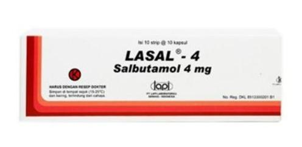 | OBAT KERAS | 166 | |||
3 | LASAL TAB 4 MG | 454 | 3,500.00 | Lasal adalah obat yang digunakan untuk mengatasi asma, bronkitis kronis, penyakit obstruktif kronis, atau emfisema. Obat ini dapat meredakan keluhan, seperti sesak napas, mengi, dan batuk, akibat kondisi tersebut. Lasal tersedia dalam bentuk obat minum dan suntik dengan kandungan salbutamol. | OBAT KERAS | 335 | #NAME? | ||
4 | LASAL TAB 2 MG | 453 | 2,999.99 | Lasal 2 mg 10 Kapsul mengandung Salbutamol Sulfate. Salbutamol Sulfate adalah senyawa yang secara selektif merangsang reseptor beta-adrenergik pada otot polos bronkus, sehingga meningkatkan produksi AMP siklik dan mengaktifkan enzim adenil siklase yang menyebabkan relaksasi otot bronkus serta memperlebar saluran pernapasan. Obat ini digunakan untuk membantu meredakan kejang bronkus pada kondisi seperti asma bronkial, bronkitis kronis, dan emfisema dengan tujuan memperbaiki fungsi pernapasan melalui bronkodilatasi. Dalam penggunaan obat ini HARUS SESUAI PETUNJUK DOKTER. | OBAT KERAS | 431 | |||
5 | TEOSAL TAB | 896 | 1,500.00 | 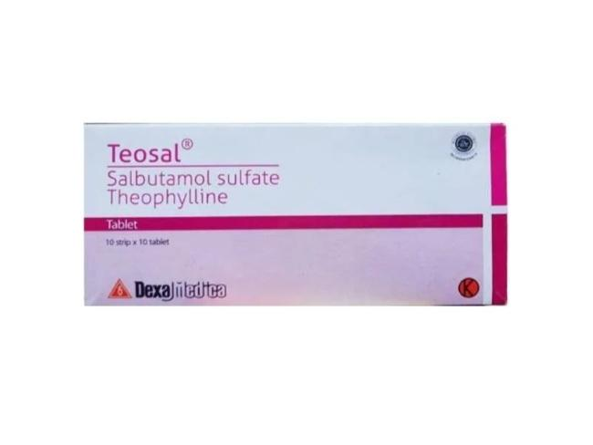 | Teosal Tablet adalah obat kombinasi yang mengandung Salbutamol (agonis beta-2) dan Theophylline (metilxantin). Obat ini digunakan untuk mengobati dan meringankan gejala bronkospasme pada pasien asma bronkial dan penyakit paru obstruktif kronis (PPOK). Obat ini tergolong Obat Keras (HARUS DENGAN RESEP DOKTER). Dalam pembelian, pasien akan diarahkan untuk mengikuti sesi edukasi singkat dengan Dokter kami mengenai penggunaan yang tepat dan aman. Informasi Umum Terkait Kandungan: Salbutamol bekerja cepat dengan merelaksasi otot polos bronkus. Theophylline memberikan efek bronkodilatasi tambahan melalui penghambatan enzim phosphodiesterase dan sebagai antagonis reseptor adenosin. Kombinasi ini bertujuan memberikan efek pelebaran saluran napas yang lebih kuat dan berkelanjutan. | OBAT KERAS | 57 | ||
6 | FORTI-D 400 IU SYR | 329 | 35,500.00 | 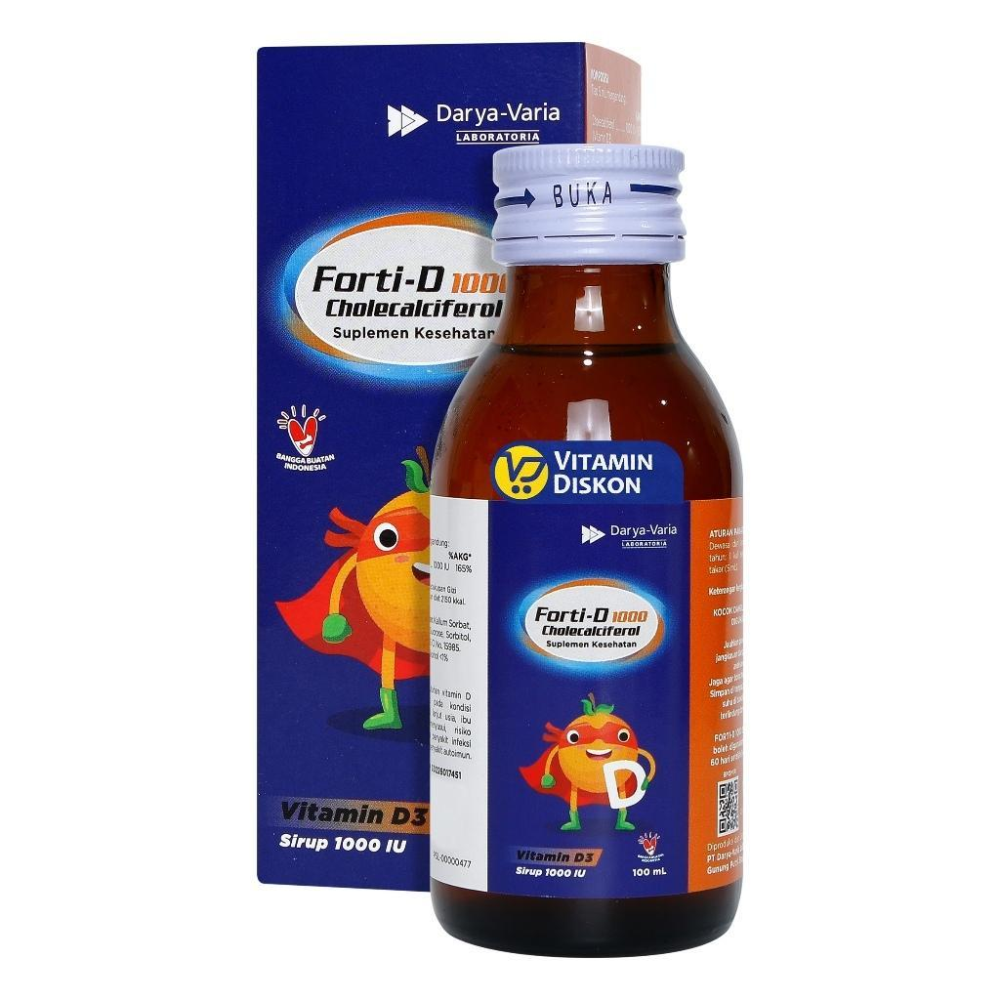 | Forti D Sirup adalah suplemen kesehatan, digunakan untuk membantu memenuhi kebutuhan vitamin D, terutama pada kondisi tertentu seperti lanjut usia, ibu hamil/menyusui, penderita infeksi, autoimun, atau risiko tinggi kekurangan vitamin D. Kandungan utama: Vitamin D3 (cholecalciferol). | SUPLEMEN | 18 | ||
7 | CHOLESTOR FC TAB 20 MG | 181 | 8,500.00 | 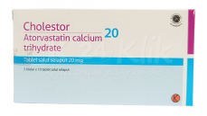 | Cholestor 20 mg adalah obat keras digunakan untuk menurunkan kadar kolesterol jahat (LDL) dan trigliserida serta meningkatkan kolesterol baik (HDL). Obat ini hanya boleh digunakan dengan resep dokter karena termasuk golongan statin. Aturan pakai : Malam sebelum tidur Kandungan : Atorvastatin Calcium 20 mg | OBAT KERAS | 25 | ||
8 | CHOLESTOR FC TAB 10 MG | 180 | 6,000.00 | 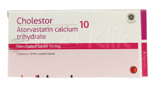 | Cholestor 10 mg adalah obat yang digunakan untuk menurunkan kolesterol jahat (LDL), trigliserida, serta meningkatkan kolesterol baik (HDL). Aturan pakai : Malam hari sebelum tidur Kandungan : Atorvastatin Calcium 10 mg | OBAT KERAS | 110 | ||
9 | ZYGOUT KAPLET | 1358 | 12,500.00 |  | Zygout 80 mg adalah obat resep yang digunakan untuk menurunkan kadar asam urat dalam darah pada pasien dengan hiperurisemia kronis (penyakit gout). Obat ini diberikan terutama pada pasien yang tidak cocok atau tidak merespons terapi dengan allopurinol. Aturan pakai : Sesudah makan Kandungan : Febuxostat 80 mg | OBAT KERAS | 121 | ||
10 | KOLSIN TAB | 1343 | 4,499.99 | Kolsin 0,5 mg merupakan obat yang digunakan untuk mengobati atau mencegah serangan gout (kadar asam urat tinggi dalam darah). Dalam penggunaan obat ini harus SESUAI DENGAN PETUNJUK DOKTER. Aturan pakai : Sesudah makan Kandungan : Cholchicine 0,5 mg | OBAT KERAS | 49 | |||
11 | BENOXURIC TAB 100MG | 70 | 3,500.00 |  | Benoxuric adalah obat lini utama untuk mengontrol kadar asam urat pada pasien gout dan hiperurisemia. Obat ini efektif mencegah serangan berulang. Karena termasuk obat keras, penggunaannya harus dengan resep dan pengawasan dokter. Aturan pakai : Sesudah makan Kandungan : Allopurinol 100 mg | OBAT KERAS | 210 | ||
12 | BENOXURIC TAB 300MG | 71 | 5,500.00 |  | Benoxuric adalah obat lini utama untuk mengontrol kadar asam urat pada pasien gout dan hiperurisemia. Obat ini efektif mencegah serangan berulang. Karena termasuk obat keras, penggunaannya harus dengan resep dan pengawasan dokter. Aturan pakai : Sesudah makan Kandungan : Allopurinol 300 mg | OBAT KERAS | 155 | ||
13 | PROMUCIL EFF | 701 | 109,000.00 | Promucil adalah obat digunakan sebagai mukolitik untuk membantu mengencerkan dahak pada saluran pernapasan. Obat ini juga memiliki manfaat tambahan sebagai antidotum (penawar) pada keracunan parasetamol. Aturan pakai : Sesudah makan, Larutkan dalam 1 gelas air Kandungan : N-acetylcysteine/NAC | OBAT KERAS | 4 | |||
14 | INTUNAL FORTE TAB | 405 | 1,999.99 |  | Intunal-F tablet merupakan obat untuk meringankan gejala flu seperti demam, sakit kepala, hidung tersumbat dan bersin-bersin yang disertai batuk. Aturan pakai : Sesudah makan, Kandungan : Pct 500 mg, PPA HCl 15mg, Dexchlorpheniramine maleat 2mg, Dextrometorphan HBr 15mg, GG 50mg | OBAT BEBAS TERBATAS | 368 | ||
15 | L-ACYS CAPS | 436 | 5,500.00 |  | L-ACYS digunakan untuk mengobati penyakit pada saluran napas yang ditandai dengan hipersekresi mukus (dahak) pada kondisi bronkitis akut atau kronis, emfisema paru, dan bronchieactasis. Aturan pakai : Sesudah makan, Kandungan : N-acetylcysteine | OBAT KERAS | 644 | ||
16 | GLYCERYL GUAIACOLATE TAB | 352 | 1,000.00 |  | Glyceryl guaiacolate merupakan jenis obat yang masuk ke dalam golongan ekspektoran. Aturan pakai : Sesudah makan | OBAT BEBAS TERBATAS | 305 | ||
17 | DOSIVEC CAPS 300 MG | 247 | 6,000.00 | 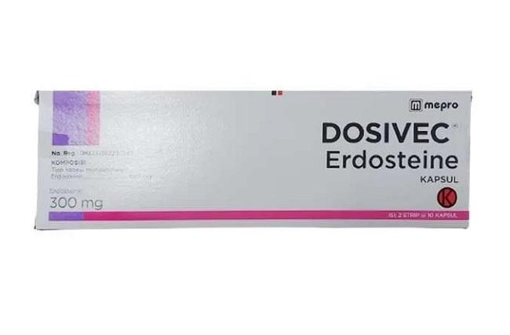 | Dosivec adalah obat untuk meredakan batuk berdahak, bantu mengatasi keluhan pada kondisi bronkitis kronis atau bronkitis akut. Aturan pakai : Sesudah makan, Kandungan : Erdostein 300mg | OBAT KERAS | 1043 | ||
18 | RHINOS SR | 1287 | 9,500.00 |  | Rhinos SR adalah obat yang digunakan untuk mengatasi gejala alergi rhinitis, seperti bersin, mukokonstipasi, rhinorhoea, dan pruritus nasal. Obat ini direkomendasikan ketika diperlukan efek antihistamin dan efek dekongestan. Aturan pakai : Sesudah makan, Kandungan : Loratadine 5mg, pseudoefedrin hcl 120mg | OBAT KERAS | 406 | ||
19 | EFLIN TAB | 259 | 2,500.00 |  | Eflin adalah obat untuk meringankan gejala flu, pilek, dan alergi, seperti bersin-bersin, hidung meler maupun tersumbat, atau mata berair. Aturan pakai : Sesudah makan, Kandungan : Triprolidine 2,5 mg, pseudoefedrin 60mg | OBAT KERAS | 1232 | ||
20 | LAMESON 8MG TAB | 445 | 10,500.00 |  | Lameson 8 mg 10 Tablet mengandung Methylprednisolone. Methylprednisolone merupakan obat kortikosteroid sistemik yang digunakan untuk menekan reaksi peradangan dan alergi yang berat pada berbagai kondisi medis. Informasi Umum Terkait Kandungan: Methylprednisolone adalah glukortikosteroid sintetis yang bekerja sebagai agen anti-inflamasi dan imunosupresif. Obat ini bekerja dengan meniru dan memperkuat efek hormon kortikosteroid alami tubuh, dengan cara masuk ke dalam sel dan menghambat produksi berbagai mediator peradangan (seperti prostaglandin dan leukotrien). Mekanisme ini secara efektif mengurangi gejala-gejala peradangan seperti pembengkakan, kemerahan, dan nyeri, serta menekan reaksi sistem imun yang berlebihan pada penyakit autoimun. | OBAT KERAS | 1281 | ||
21 | PRODEXON TAB | 694 | 1,500.00 |  | PRODEXON 0.5 MG 10 TABLET mengandung Dexamethasone 0.5 mg sebagai zat aktif. Obat ini termasuk dalam golongan kortikosteroid sintetis yang memiliki aktivitas anti-inflamasi dan imunosupresif. Dexamethasone diindikasikan untuk penanganan berbagai kondisi yang memerlukan efek anti-inflamasi dan penekanan sistem kekebalan tubuh, seperti alergi berat, gangguan peradangan (misalnya artritis reumatoid, asma bronkial), dan kondisi medis lain sesuai dengan resep dokter. Mekanisme kerjanya adalah dengan menekan respons inflamasi tubuh dan modulasi respons imun. | OBAT KERAS | 1212 | ||
22 | MEPROSON TAB 4 MG | 520 | 4,499.99 |  | MEPROSON 4 adalah obat yang mengandung Methylprednisolone, suatu glukokortikoid sintetik turunan prednisolon. Obat ini memiliki efek antiinflamasi dan imunosupresif yang poten. Mekanisme kerjanya melibatkan ikatan dengan reseptor glukokortikoid intraseluler, yang setelah teraktivasi akan berikatan dengan daerah promotor DNA. Proses ini memodulasi transkripsi gen, baik mengaktivasi maupun menekan ekspresi gen tertentu, termasuk melalui deasetilasi histon, sehingga mengakibatkan penurunan produksi mediator inflamasi. PREDNICORT secara klinis diindikasikan untuk penanganan berbagai kondisi alergi dan inflamasi yang memerlukan terapi glukokortikoid, seperti pada penyakit autoimun, gangguan pernapasan, serta kondisi dermatologis dan reumatologis. | OBAT KERAS | 1712 | ||
23 | SULCOLON TAB | 860 | 10,500.00 |  | SULCOLON merupakan antiinflamasi yang mengandung Sulfasalazine. Obat ini digunakan untuk meredakan gejala radang usus atau kolitis ulseratif, seperti nyeri perut, demam, diare, atau pendarahan di usus besar. Selain itu, obat ini dapat digunakan untuk rheumatoid arthtitis (RA), yaitu radang kronis pada sendi. Informasi Umum Terkait Kandungan: Sulfasalazine bekerja dengan cara menghambat sintesis prostaglandin sehingga tidak terjadi respon sakit. | OBAT KERAS | 57 | ||
24 | FRESHCARE STRONG | 333 | 16,000.00 | 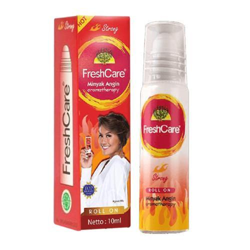 | Minyak angin aromaterapi | OBAT BEBAS | 2 | ||
25 | PANADOL EXTRA/STRIP | 644 | 15,000.00 |  | Panadol Extra merupakan obat yang digunakan untuk meredakan demam dan rasa nyeri atau sakit kepala. Panadol Extra mengandung zat aktif Paracetamol (Acetaminophen) yaitu zat aktif yang memiliki aktivitas sebagai penurun demam/antipiretik dan pereda nyeri/analgesik yang bekerja dengan cara menghambat pembentukan prostaglandin yaitu zat yang memicu nyeri dan demam di hipotalamus untuk meningkatkan pelepasan panas supaya suhu tubuh normal. Dikombinasikan dengan kafein yang berfungsi untuk mencegah rasa kantuk. | OBAT BEBAS | 9 | ||
26 | PANADOL/STRIP | 645 | 13,500.00 |  | PANADOL BIRU TABLET 1 STRIP memiliki kandungan bahan aktif Paracetamol. Paracetamol bekerja dengan cara mengurangi kadar prostaglandin di dalam tubuh, sehingga tanda peradangan seperti demam dan nyeri akan berkurang. Obat ini digunakan untuk meringankan rasa sakit seperti sakit kepala, sakit gigi serta menurunkan demam. Paracetamol dapat dikonsumsi sesudah makan. Konsultasikan terlebih dahulu kepada dokter apabila akan digunakan pada pasien dengan kondisi: • Riwayat alergi terhadap kandungan obat ini. • Pasien dengan penyakit gangguan hati berat. • Pasien yang mengonsumsi alkohol dapat meningkatkan potensi kerusakan hati. • Pasien dengan penyakit gangguan ginjal. Interaksi dapat terjadi apabila digunakan bersamaan dengan obat-obatan seperti: • Metoclopramide dapat meningkatkan efek analgetic paracetamol. • Paracetamol meningkatkan efek obat warfarin. • Carbamazepine meningkatkan potensi kerusakan hati. | OBAT BEBAS | 8 | ||
27 | DULCOLAX TAB /STRIP ISI 4 | 253 | 12,000.01 |  | Dulcolax merupakan obat pencahar yang menginduksi gerakan usus dan melunakkan feses sehingga membantu melancarkan proses Buang Air Besar (BAB) serta mengosongkan usus dari kotoran sebelum dilakukan kolonoskopi atau operasi. Dulcolax mengandung zat aktif Bisakodil yaitu obat turunan metana jenis stimulan yang bekerja dengan merangsang saraf enterik sehingga mengakibatkan kontraksi pada usus besar pada saat mengeluarkan feses sekaligus membersihkan atau mengosongkan isi di dalam usus besar | OBAT BEBAS | 24 | ||
28 | TOLAK ANGIN DEWASA | 907 | 5,000.00 |  | Tolak Angin Cair Plus Madu merupakan obat herbal terstandar yang bermanfaat untuk mengatasi masuk angin dengan gejala seperti mual, kembung, pusing, badan meriang dan terasa lemas. | OBAT BEBAS | 8 | ||
29 | MYCORINE CREAM 5GR | 564 | 30,000.00 |  | MYCORINE CREAM 5 GR adalah sediaan topikal antijamur golongan imidazol yang efektif digunakan untuk mengatasi infeksi jamur pada kulit. Produk ini mengandung Miconazole Nitrate 2%, yang bekerja dengan menghambat biosintesis ergosterol pada jamur, komponen penting pada membran sel jamur, sehingga mengganggu integritas membran dan menyebabkan nekrosis sel jamur. Krim ini secara umum diindikasikan untuk pengobatan berbagai kondisi infeksi kulit yang disebabkan oleh fungi seperti Trichophyton, Epidermophyton, Microsporum, Candida, dan Malessezia furfur. Contoh infeksi yang dapat ditangani meliputi tinea pedis (kutu air), tinea cruris (gatal pada selangkangan), tinea corporis (kurap), dan kandidiasis kulit. | OBAT BEBAS | 15 | ||
30 | SANMOL FORTE TAB 650 MG | 771 | 1,500.00 |  | Obat yang mengandung Paracetamol dengan dosis 650 mg. Obat ini digunakan untuk meredakan nyeri seperti sakit kepala, sakit gigi, dan menurunkan demam. Informasi umum terkait kandungan: Obat ini bekerja secara sentral di pusat pengatur suhu dan nyeri di otak. Komposisi Tiap tablet mengandung Paracetamol 650 mg. | OBAT BEBAS | 851 | ||
31 | NULOSE SYR 120 ML | 617 | 99,500.00 |  | NULOSE SYR 120 ML adalah sirup pencahar yang mengandung bahan aktif Lactulose, digunakan untuk mengobati sembelit (konstipasi) kronis dan kondisi gangguan fungsi otak akibat gagal hati (ensefalopati portal-sistemik). Lactulose bekerja dengan menarik cairan ke usus, melunakkan feses, dan mengubah keasaman usus, serta membantu menekan pertumbuhan bakteri berbahaya sambil meningkatkan bakteri baik. | OBAT BEBAS | 8 | ||
32 | MADU MURNI NUSANTARA 650ML | 482 | 159,000.00 |  | Nusantara Madu Murni 650 Ml berkhasiat untuk kesehatan tubuh. Meningkatkan stamina dan daya tahan tubuh. Meredakan demam, batuk, pilek, sakit kepala, panas dalam, sariawan, bibir pecah-pecah, radang tenggorokan, amandel, menjaga kesehatan kulit, Nutrisi bergizi bagi ibu hamil dan menyusui. | OTC | 1 | ||
33 | MICROLAX GEL | 534 | 27,000.00 | 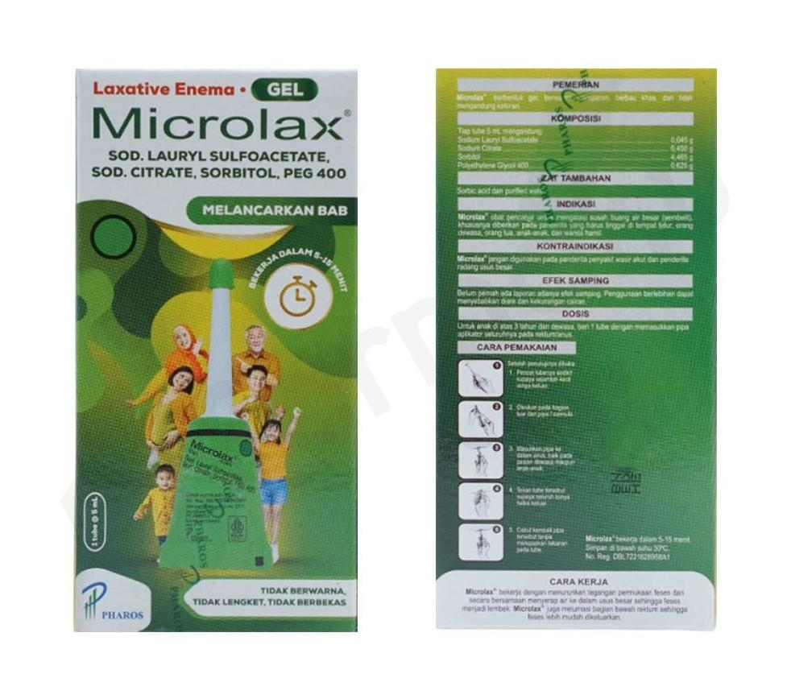 | Microlax adalah obat pencahar berbentuk gel yang digunakan untuk mengatasi sembelit dengan cara melunakkan dan mempermudah pengeluaran feses. Informasi Umum Terkait Kandungan: Natrium Lauril Sulfat adalah surfaktan yang melunakkan tinja. Natrium Sitrat bertindak sebagai pelunak tinja. Sorbitol adalah osmotik laksatif yang menarik air ke dalam usus. Kombinasi ini bekerja secara sinergis dalam hitungan menit untuk melunakkan tinja dan memicu gerakan usus, sehingga mempermudah buang air besar tanpa menyebabkan kram yang parah. | OBAT BEBAS | 3 | ||
34 | CALADINE POWDER ORIGINAL 100G | 114 | 21,500.00 |  | CALADINE POWDER ORIGINAL 100 G merupakan bedak tabur untuk mengurangi gatal-gatal karena biang keringat. Komposisi : Calamine, Zinc oxide, Camphor, Menthol | OBAT BEBAS | 5 | ||
35 | SANMOL TAB 500 MG | 773 | 1,500.00 | 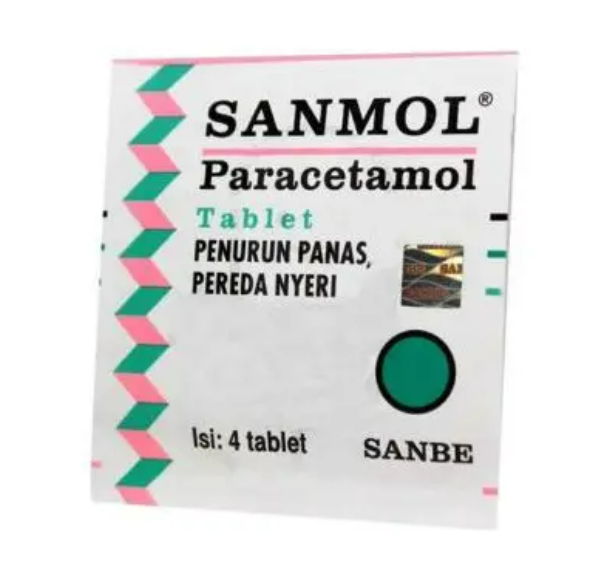 | Obat dengan kandungan Paracetamol 500 mg. - Obat ini digunakan untuk meringankan rasa sakit pada keadaan sakit kepala, sakit gigi dan menurunkan demam. | OBAT BEBAS | 839 | ||
36 | MEVITON TAB | 531 | 2,500.00 |  | Meviton merupakan multivitamin yang dapat membantu meningkatkan stamina dan menjaga daya tahan tubuh supaya tidak mudah jatuh sakit. | OBAT BEBAS | 488 | ||
37 | MYCONIX SALEP 10 GR | 1384 | 81,499.99 | adalah salep antijamur untuk infeksi kulit seperti ruam popok, kurap, kutu air, dan jamur pada lipatan kulit, menggabungkan Nystatin (antijamur) dan Zinc Oxide (pelindung kulit), bekerja membunuh jamur dan mencegah iritasi, harus dengan resep dokter karena termasuk obat keras. | OBAT KERAS | 1 | |||
38 | L-VIT D3 5000 IU | 438 | 6,000.00 |  | L-Vit D3 merupakan obat dengan kandungan zak aktif Cholecalciferol (vitamin D3) 5000 IU dalam bentuk soft kapsul yang mempunyai efek kerja sebagai mencegah kekurangan vitamin D, membantu meningkatkan daya tahan tubuh, mengatasi dan mencegah osteoporosis, serta mengatasi hipoparatiroid, rakitis, dan hipofosfatemia. | OBAT BEBAS | 494 | ||
39 | HICAL TAB | 371 | 2,500.00 |  | Vitamin yang mengandung Calcium carbonate, vitamin D3, magnesium oksida, zn sulfat, natrium florida untuk memenuhi kebutuhan kalsium dan vitamin d3 pada anak dan ibu hamil | OBAT BEBAS | 0 | ||
40 | CAL-95 CAPLET | 112 | 9,500.01 |  | Cal-95 1100 mg adalah suplemen yang bermanfaat sebagai terapi tambahan untuk mengatasi osteoporosis. Cal-95 1100 mg merupakan suplemen kalsium yang dilengkapi dengan soy isoflavone serta vitamin dan mineral lain yang juga mendukung kesehatan tulang. Suplemen ini dapat digunakan untuk mendukung kesehatan tulang pada kelompok yang membutuhkan lebih banyak kalsium atau yang berisiko mengalami osteoporosis, seperti wanita pasca menopause, lansia, atau pengguna kortikosteroid. | OBAT BEBAS | 100 | ||
41 | FOLAVIT 1000 MCG TAB | 323 | 3,500.00 | 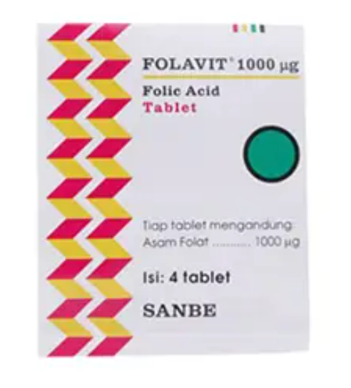 | Mencegah dan mengatasi kekurangan asam folat, terutama pada penderita anemia megaloblastik, ibu hamil, atau ibu menyusui. Mengandung asam folat 1000 mcg | OBAT BEBAS | 256 | ||
42 | PROMAVIT TAB | 699 | 6,500.00 |  | suplemen mineral dan vitamin yang memberi manfaat dalam memelihara kesehatan ibu hamil dan menyusui. Kandungan: Vitamin A 345 IU, Vitamin B12 0.5 mcg, Vitamin B6 150 mcg, Vitamin D3 34.5 IU, Asam lemak omega 3 64.5 mg, Minyak ikan tuna 179 mg, Fe fumarat 23.5 mg, DHA 48.5 mg, EPA 12.5 mg, Asam folat 400 mcg, Magnesium oksida 62.5 mg, Kalsium karbonat 100 mg | OBAT BEBAS | 181 | ||
43 | THROMBOPHOB OINT 15GR | 901 | 61,500.00 |  | THROMBOPHOB OINTMENT merupakan salep dengan kandungan zat aktif Heparin Sodium dan Asam Nikotinat Bezylester. Heparin merupakan suatu antikoagulan yang dapat mencegah terbentuknya gumpalan-gumpalan dalam darah dan membantu memcahkan pembekuan darah yang telah terbentuk. Obat ini digunakan unutk mengatasi memar, trombosis permukaan, tromboflebitis, kaku kedinginan, koreng kaki, radang selaput dada (pleuritis), kejang betis, tendovaginitis, bisul, menghilangkan haematomata, mencegah dan mengobati radang pembuluh balik setelah penyuntikan intravena dan infiltrat setelah injeksi paravenous, pencegahan ulkus dekubital dan perawatan setelah amputasi. Komposisi : Setiap 100 gram mengandung 5000 IU Sodium Heparin, 0.25 gram Asam Nikotinat Bezylester. | OBAT BEBAS | 3 | ||
44 | FG TROCES | #N/A | #N/A |  | Tablet hisap yang bermanfaat untuk mengatasi infeksi bakteri pada rongga mulut, seperti radang tenggorokan atau sariawan. neomycin sulfate (fradiomycin sulfate) 2,5 mg dan gramicidin 1 mg. | OBAT KERAS | #N/A | ||
45 | APIALYS SYRUP | 37 | 58,999.99 | 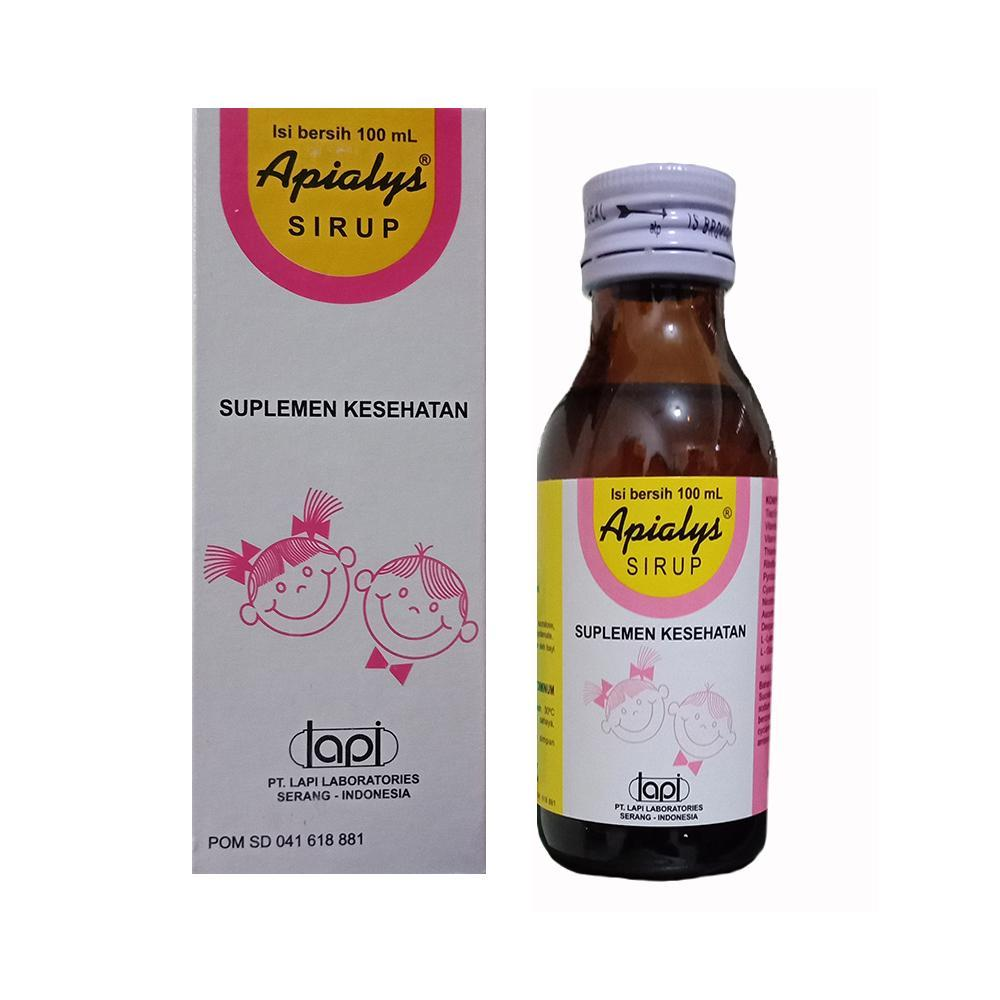 | APIALYS SIRUP adalah suplemen kesehatan yang diformulasikan untuk membantu memenuhi kebutuhan multivitamin pada anak, terutama dalam masa pertumbuhan. Produk ini mengandung kombinasi berbagai vitamin esensial seperti Vitamin A, Vitamin D, Vitamin B Kompleks (B1, B2, B6, B12, Nicotinamide, Dexpanthenol), dan Vitamin C, serta dilengkapi dengan asam amino L-Lysine dan L-Glutamic Acid untuk membantu melengkapi asupan nutrisi harian anak. Informasi Umum Terkait Kegunaan Vitamin yang Terkandung* : *(Informasi ini bersifat edukatif dan tidak dimaksudkan sebagai klaim manfaat langsung dari produk ini di luar indikasi utamanya) Vitamin A & D: Membantu menjaga kesehatan mata, serta pertumbuhan tulang dan gigi. Vitamin B Kompleks (B1, B2, B3, B6, B12, Dexpanthenol): Membantu dalam proses metabolisme untuk menghasilkan energi dan menjaga kesehatan sistem saraf. Vitamin C: Sebagai antioksidan yang membantu melindungi sel tubuh dan mendukung fungsi sistem kekebalan tubuh. L-Lysine & L-Glutamic Acid: Sebagai asam amino yang penting untuk pertumbuhan jaringan. L-Lysine juga membantu menjaga nafsu makan yang baik pada anak. Komposisi : Tiap 5 ml sirup mengandung: Vitamin A 5.000 IU Vitamin D3 400 IU Thiamine hydrochloride (Vitamin B1) 3 mg Riboflavin (Vitamin B2) 2 mg Pyridoxine hydrochloride (Vitamin B6) 6 mg Cyanocobalamin (Vitamin B12) 5 mcg Nicotinamide (Vitamin B3) 20 mg Ascorbic Acid (Vitamin C) 50 mg Dexpanthenol 5 mg L-Lysine monohydrochloride 250 mg L-Glutamic Acid 25 mg | OBAT BEBAS | 31 | ||
46 | SIRPLUS SYRUP STRAWBERRY 100 ML | 826 | 19,500.00 |  | SIRPLUS SIRUP RASA STRAWBERRY 100 ML adalah sirup pemanis (flavoring syrup) yang diformulasikan khusus untuk membantu mempermudah pemberian obat. Sirup ini dirancang sebagai pelarut atau campuran untuk menutupi rasa pahit obat, terutama obat puyer (serbuk). Informasi Umum Terkait Kandungan: Produk ini adalah Sirupus Simplex (sirup gula sederhana) yang telah diberi perasa stroberi yang disukai anak-anak. Fungsi utamanya adalah sebagai pelarut (vehicle) dan pemanis (sweetener). Dengan mencampurkan obat puyer yang pahit ke dalam sirup ini, rasa obat yang tidak enak dapat tersamarkan, sehingga memudahkan anak untuk mengonsumsi obatnya dengan tuntas. Komposisi : Gula (Sukrosa), Glukosa, Perisa Strawberry, Air. | OBAT BEBAS | 52 | ||
47 | SIRPLUS SYRUP ANGGUR 100 ML | 823 | 19,500.00 | 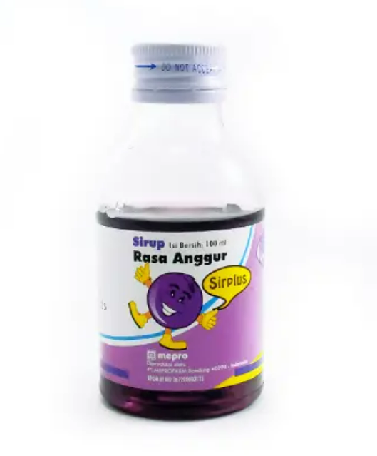 | Sirplus Sirup Anggur merupakan sirup yang berfungsi sebagai pelarut dan pemanis campuran obat. Anda bisa campurkan Sirplus Sirup Anggur dengan obat puyer yang harus dikonsumsi anak, agar anak tak merasakan cita rasa pahit dari obat tersebut. Komposisi : Gula Alami, Sirup Rasa Anggur | OBAT BEBAS | 100 | ||
48 | SIRPLUS SYRUP MELON 100 ML | 825 | 19,500.00 | Sirplus Sirup Melon merupakan sirup yang berfungsi sebagai pelarut dan pemanis campuran obat. Anda bisa campurkan Sirplus Sirup Melon dengan obat puyer yang harus dikonsumsi anak, agar anak tak merasakan cita rasa pahit dari obat tersebut. Komposisi : Gula, Air, Perisa melon, Pengental Karboksimetil Selulosa, Pengawet Natrium Benzoat, Pewarna makanan | OBAT BEBAS | 35 | |||
49 | SANMOL SYR 60 ML | 772 | 23,000.00 |  | SANMOL SIRUP merupakan obat dengan kandungan Paracetamol. Obat ini digunakan untuk meringankan rasa sakit pada keadaan sakit kepala, sakit gigi dan menurunkan demam. Sanmol bekerja pada pusat pengatur suhu di hipotalamus untuk menurunkan suhu tubuh (antipiretik) serta menghambat sintesis prostaglandin sehingga dapat mengurangi nyeri ringan sampai sedang (analgetik). | 23 | |||
50 | MUCOS DROP 20 ML | 555 | 47,000.00 |  | Mucos Drops 20 Ml bermanfaat untuk mengatasi batuk berdahak dan gangguan pernapasan lain akibat produksi dahak yang berlebihan. Mucos Drops 20 Ml membantu mengencerkan dahak agar lebih mudah dikeluarkan dari tenggorokan saat batuk. Dengan begitu, saluran pernapasan lebih terbuka dan terasa lega. Komposisi : Per-mL : Ambroxol HCl 15 mg | OBAT KERAS | 7 | ||
51 | SUPRALYSIN SYR 100ML | 869 | 41,000.00 |  | Supralysin Sirup 100 Ml merupakan kombinasi multivitamin dan Lysine, yang terdiri dari Vitamin B-complex, Vitamin A, Vitamin D, Vitamin C dan Lysine. Komposisi : Vitamin B-complex, Vitamin A, Vitamin D, Vitamin C dan Lysine. | OBAT BEBAS | 5 | ||
52 | BIOCOMBIN FC TAB | 93 | 2,500.00 |  | Biocombin mengandung vitamin B kompleks yang dapat digunakan untuk membantu pengobatan defisiensi vitamin B kompleks seperti halnya penyakit beri-beri, polineuritis alkoholik dan anemia pernisiosa. Mengandung 100mg thiamine monohidrate, 200mg pyridoxine HCl, dan 200mcg cyanocobalamine | VITAMIN SUPLEMEN | 276 | ||
53 | MALTIRON PLUS TAB | 487 | 2,500.00 |  | Mencegah kekurangan zat besi dan vitamin B pada wanita hamil dan menyusui di masa pemulihan. Mengandung Fe Glukonat, Vit-B1, Vit-B2, Vit-B6, nikotinamid, biotin | VITAMIN SUPLEMEN | 238 | ||
54 | AQUABIDEST 25 ML | #N/A | 4,499.99 |  | Aquabidest 25ml adalah air murni ganda (double distilled water) dengan kemurnian sangat tinggi, dihasilkan dari penyulingan dua kali (bidestilasi) yang menghilangkan mineral dan zat lain. Kandungan utamanya adalah H2O (Air Murni) | 473 | |||
55 | L-BIO SACHET | 437 | 13,500.00 |  | L-Bio 30 Sachet adalah obat yang digunakan untuk melindungi sistem pencernaan dan memperbaiki fungsi normal saluran pencernaan ketika mengalami kondisi diare, konstipasi dan penggunaan antibiotika jangka panjang pada bayi, anak-anak ataupun dewasa. Komposisi : Rice starch, Maltodextrin, Lactobacillus Acidophilus, Lactobacillus Casei, Lactobacillus Salivarius, Bifidobacterium Infantis, Bifidobacterium Lactis, Bifidobacterium Longum, Lactococcus Lactis | VITAMIN DAN SUPLEMEN | 268 | ||
56 | KASA ROLL 10CM/1PIECE | 1310 | 5,500.00 | 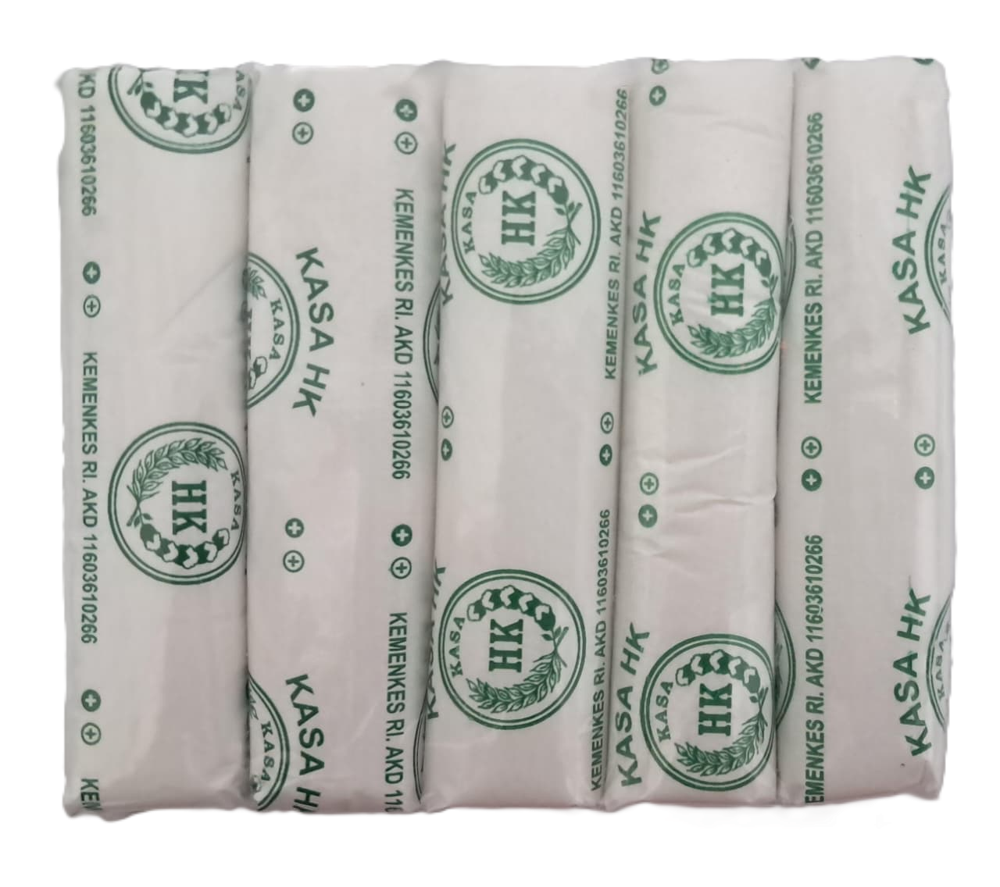 | Kasa Roll 10cm/1piece adalah gulungan kain kasa lebar 10 cm yang digunakan untuk membalut luka, menyerap cairan, dan menahan perban, biasanya terbuat dari bahan hidrofil berdaya serap tinggi tanpa sambungan untuk menjaga kebersihan luka. | ALKES | 41 | ||
57 | DERMAFIX T 10X15 | 1307 | 8,500.00 |  | plester luka transparan, steril, kedap air, dan breathable (memungkinkan kulit bernapas) dengan ukuran 10x15 cm, dilengkapi bantalan penyerap cairan, berfungsi melindungi luka besar atau pasca operasi (seperti caesar) dari bakteri sambil tetap memungkinkan aktivitas mandi dan menjaga kelembaban kulit. | ALKES | 8 | ||
58 | KSR 600MG TAB | 435 | 6,500.00 | 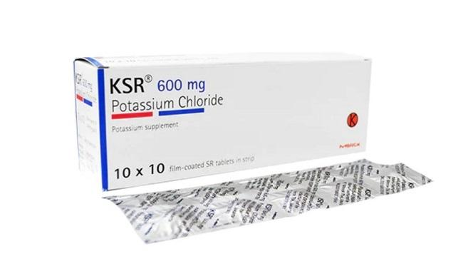 | suplemen kalium yang bermanfaat untuk mengobati dan mencegah kekurangan kalium. | OBAT KERAS | 74 | ||
59 | INTERLAC TAB | 404 | 15,500.00 | 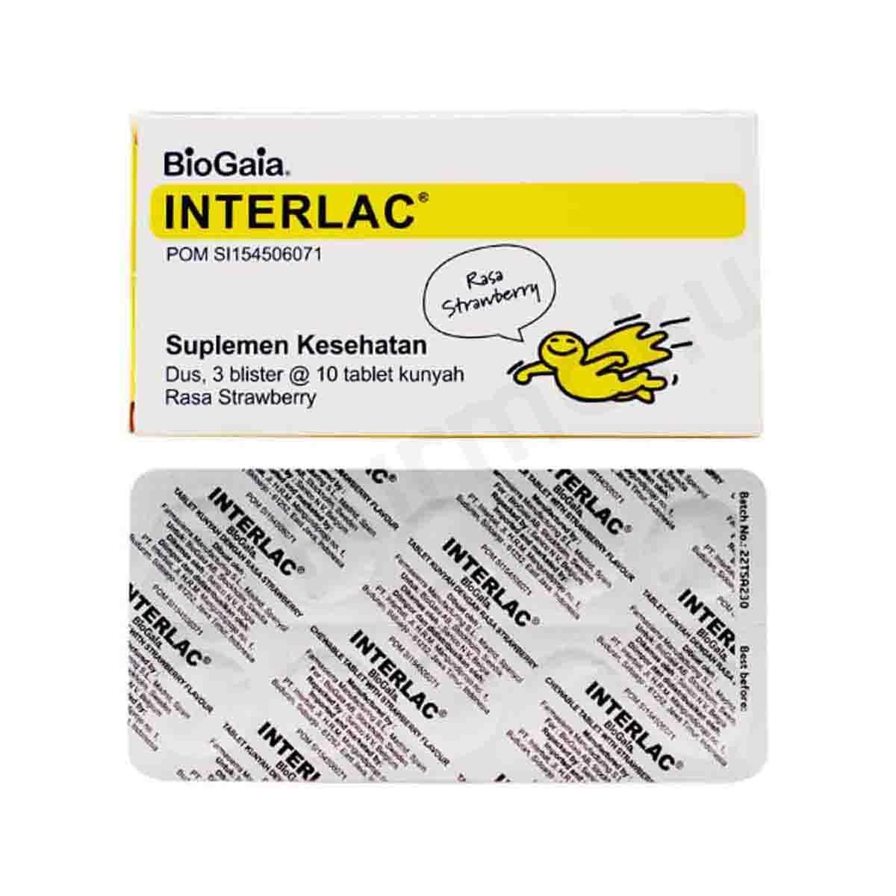 | Interlac adalah suplemen probiotik untuk memelihara kesehatan fungsi saluran pencernaan pada bayi baru lahir hingga orang dewasa. Bila sistem pencernaan sehat, penyerapan nutrisi akan lebih optimal, buang air besar teratur, dan daya tahan tubuh kuat sehingga tidak mudah sakit. Komposisi : Tiap tablet kunyah mengandung : Lactobacillus reuteri (Lactobacillus reuteri DSM 17938) 100.000.000 CFU | VITAMIN SUPLEMEN | 21 | ||
60 | ZIRCUM KID TAB | 997 | 2,500.00 |  | Suplemen selama diare, diberikan bersama dengan cairan rehidrasi oral, pada anak. Mengandung Zinc Sulfate | VITAMIN SUPLEMEN | 375 | ||
61 | COMBES FC TAB | #N/A | 5,499.99 | 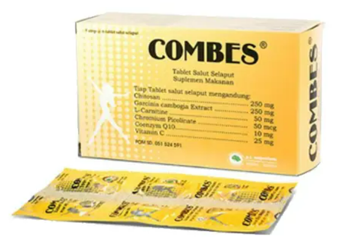 | Combes merupakan tablet dengan kombinasi chitosan, ekstrak garsinia cambogia, L-carnitine, chromium picolinat, coenzime Q10 dan vitamin C yang dapat membantu mengurangi lemak tubuh. Komposisi : Chitosan 250 mg, ekstrak garcinia Cambogia 250 mg, L-carnitine 50 mg, Chromium Picolinate 50 mcg, fermented Co-enzyme Q10 10 mg, Vit.C 25 mg | VITAMIN SUPLEMEN | 75 | ||
62 | ULTRAFIX 10CMX1M | 924 | 10,500.00 |  | plester penutup luka steril berbahan kain non-woven yang lembut, fleksibel, dan berpori, digunakan untuk menempelkan kasa atau penutup luka lain, melindungi luka dari kotoran, serta membantu sirkulasi udara agar luka cepat kering dan sembuh | ALKES | 29 | ||
63 | HY-FOLIC TAB | 372 | 6,000.00 |  | Membantu memenuhi kebutuhan asam folat. Tiap kaplet salut selaput mengandung: (6S)-5-Methyltetrahydrofolic Acid, Glucosamine Salt (Quatrefolic®) 1.100 mcg (setara dengan 550 mcg 5-MTHF atau folat aktif) | VITAMIN DAN SUPLEMEN | 62 | ||
64 | MASKER NEBULIZER DEWASA | 498 | 34,000.00 | Masker nebulizer dewasa adalah alat medis sekali pakai berbentuk masker untuk pasien dewasa, berfungsi menghirup obat cair yang diubah jadi uap oleh mesin nebulizer, terbuat dari PVC medis, dilengkapi wadah obat dan selang untuk mengantarkan kabut obat langsung ke saluran pernapasan, membantu mengatasi masalah pernapasan seperti asma atau sesak napas. | ALKES | 46 | |||
65 | MASKER NEBULIZER ANAK | 497 | 34,000.00 | Masker nebulizer aNAK adalah alat medis sekali pakai berbentuk masker untuk pasien anak, berfungsi menghirup obat cair yang diubah jadi uap oleh mesin nebulizer, terbuat dari PVC medis, dilengkapi wadah obat dan selang untuk mengantarkan kabut obat langsung ke saluran pernapasan, membantu mengatasi masalah pernapasan seperti asma atau sesak napas. | ALKES | 26 | |||
66 | MINYAK TELON CAPLANG 60 ML | 545 | 20,000.00 |  | Minyak telon dengan sensasi hangat yang pas untuk bayi yang baru lahir. Dibuat dari bahan alami agar si kecil tetap sehat dan nyaman. | OTC | 1 | ||
67 | MEFIX TAB 500 MG | 510 | 2,500.00 |  | obat yang mengandung asam mefenamat, digunakan untuk meredakan nyeri ringan hingga sedang, seperti sakit kepala, nyeri otot, dan nyeri haid. | OBAT KERAS | 871 | ||
68 | MAGANOL 500MG TAB | 486 | 1,500.00 |  | Obat ini dapat digunakan untuk mengatasi nyeri akibat sakit kepala, sakit gigi, radang sendi, atau nyeri menstruasi. Obat dengan kandungan aktif paracetamol ini juga bermanfaat untuk menurunkan demam. Mengandung Paracetamol 500 Mg | OBAT BEBAS | 71 | ||
69 | MINYAK TELON CAPLANG 30 ML | 544 | 11,500.00 |  | Minyak telon dengan sensasi hangat yang pas untuk bayi yang baru lahir. Dibuat dari bahan alami agar si kecil tetap sehat dan nyaman. | OTC | 1 | ||
70 | BETADINE GARGLE 190 ML | 74 | 44,500.00 | | BETADINE GARGLE 190 ML adalah obat kumur antiseptik dengan kandungan Povidone Iodine 1%, berfungsi untuk mengatasi masalah mulut seperti sakit tenggorokan, sariawan, gusi bengkak, bau mulut, dan napas tidak segar dengan membunuh bakteri dan jamur penyebab infeksi. Cara pakai, tuang 15 ml (seukuran tutup botol), kumur 30-60 detik, 3-5 kali sehari, lalu buang. Komposisi : Povidone Iodine 1% | OBAT BEBAS TERBATAS | 2 | ||
71 | BUFECT TAB | 107 | 1,500.00 |  | obat yang mengandung Ibuprofen 200 Mg. Digunakan untuk membantu mengatasi demam, nyeri, dan peradangan, termasuk sakit kepala, nyeri otot, sakit gigi, nyeri punggung, nyeri menstruasi, hingga arthritis. | OBAT BEBAS TERBATAS | 70 | ||
72 | BETADINE VAGINAL DOUCHE 100 ML+APLICATOR | 76 | 145,500.00 |  | BETADINE VAGINAL DOUCHE 100 ML+APLICATOR adalah antiseptik kewanitaan dengan kandungan utama Povidone Iodine 10% untuk mengatasi gejala iritasi, gatal, dan keputihan akibat bakteri atau jamur (seperti Trichomonas vaginalis, Candida albicans), serta berfungsi sebagai disinfektan area kewanitaan, tersedia dengan aplikator untuk memudahkan penggunaan dengan mencampur cairan dan air hangat sesuai petunjuk dokter untuk terapi atau pembersihan rutin. Komposisi : Povidone Iodine 10% | OBAT KERAS | 2 | ||
73 | EZERRA CREAM 25 GR | 282 | 102,000.00 |  | EZERRA CREAM merupakan pelembab kulit yang memberi manfaat mengurangi gejala kulit kering dan sensitif serta dapat digunakan pada dewasa, anak, maupun bayi. Kandungan argan oil, shea butter, dan spent grain wax pada produk ini membantu menghambat proses peradangan dan alergi di epidermal kulit. Sedangkan kandungan saccharide Isomerate untuk menarik dan mempertahankan kelembaban kulit, sehingga efektif mengatasi keluhan kulit kering, gatal, dan kemerahan. | 3 | |||
74 | ARM SLING SIZE M | 45 | 35,500.00 | Arm Sling Ukuran M adalah penyangga lengan untuk cedera bahu, siku, atau patah tulang, berfungsi membatasi gerakan agar cepat sembuh, menjaga posisi, dan memberikan dukungan, biasanya terbuat dari bahan nyaman seperti non-woven agar sirkulasi udara lancar, dan cocok untuk orang dewasa dengan ukuran lengan sedang. | ALKES | 2 | |||
75 | BIOPLACENTON GEL 15 GR | 95 | 38,000.00 |  | BIOPLACENTON GEL 15G merupakan obat yang memiliki kandungan Placenta Extract dan Neomycin Sulfate. Obat ini digunakan untuk mengobati luka bakar, luka dengan infeksi, serta luka kronik dan jenis luka yang lain. | 4 | |||
76 | ARM SLING SIZE S | 46 | 35,500.00 | Arm Sling Ukuran S adalah penyangga lengan untuk cedera bahu, siku, atau patah tulang, berfungsi membatasi gerakan agar cepat sembuh, menjaga posisi, dan memberikan dukungan, biasanya terbuat dari bahan nyaman seperti non-woven agar sirkulasi udara lancar. | ALKES | 1 | |||
77 | ARM SLING SIZE L | 44 | 35,500.00 | Arm Sling Ukuran L adalah penyangga lengan untuk cedera bahu, siku, atau patah tulang, berfungsi membatasi gerakan agar cepat sembuh, menjaga posisi, dan memberikan dukungan, biasanya terbuat dari bahan nyaman seperti non-woven agar sirkulasi udara lancar. | ALKES | 1 | |||
78 | ARM SLING XL | 47 | 35,500.00 | Arm Sling Ukuran XL adalah penyangga lengan untuk cedera bahu, siku, atau patah tulang, berfungsi membatasi gerakan agar cepat sembuh, menjaga posisi, dan memberikan dukungan, biasanya terbuat dari bahan nyaman seperti non-woven agar sirkulasi udara lancar. | ALKES | 1 | |||
79 | X-CAM TAB 7,5 MG | 988 | 7,500.00 |  | obat untuk meredakan nyeri dan peradangan. Obat berbahan aktif meloxicam ini bermanfaat untuk mengatasi keluhan pada penyakit akibat peradangan sendi, seperti osteoarthritis dan rheumatoid arthritis. Mengandung Meloxicam 7,5 Mg | OBAT KERAS | 25 | ||
80 | BURNAZIN CREAM 35GR | 108 | 95,500.00 | 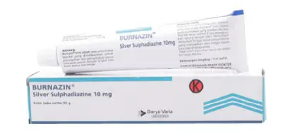 | BURNAZIN CREAM adalah obat yang mengandung Silver Sulfadiazine. Obat ini digunakan untuk mengobati atau mencegah infeksi pada luka bakar yang rentan terhadap infeksi sekunder. | OBAT KERAS | 2 | ||
81 | SPASMOLIT FC TAB | 838 | 3,500.00 |  | Obat antispasmodik yang mengandung hyoscine butylbromide, digunakan untuk meredakan kram perut dan masalah pencernaan lainnya. | OBAT KERAS | 240 | ||
82 | EFLAGEN 50 MG TAB | 1322 | 3,500.00 |  | Obat yang digunakan untuk meredakan nyeri atau peradangan misalnya akibat cedera, terkilir, atau pascaoperasi gigi dan tulang. Obat ini juga sering digunakan untuk mengatasi nyeri, bengkak, dan kaku pada radang sendi, seperti rheumatoid arthritis. | OBAT KERAS | 132 | ||
83 | MYORES TAB | 568 | 6,500.00 |  | MYORES 2 MG mengandung tizanidine yang berfungsi untuk mengobati kejang-kejang pada otot yang disebabkan oleh kondisi tertentu (seperti multiple sclerosis, cedera tulang belakang). Obat ini bekerja dengan mengendurkan otot. | OBAT KERAS | 433 | ||
84 | OCIDERM N CREAM 5 GR | 622 | 38,000.00 |  | OCIDERM N CR 5G memiliki kandungan bahan aktif Fluocinolone acetonide dan Neomycin sulfate yang digunakan untuk mengatasi peradangan pada kulit yang disertai dengan infeksi bakteri, dan ditandai dengan perubahan pada kulit. Komposisi : Tiap gram krim mengandung Fluocinolone Acetonide 0.025% dan Neomycin Sulfate 5 mg. | OBAT KERAS | 14 | ||
85 | NUSCAB CR 30 GR | 618 | 99,500.00 | 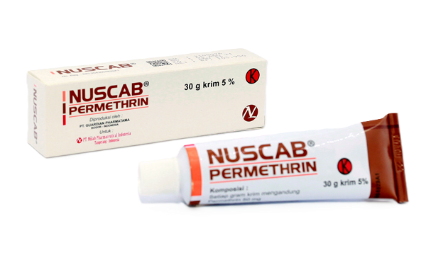 | Nuscab krim adalah obat untuk mengatasi infeksi parasit di kulit, seperti kutu di rambut kepala dan kutu kelamin, hingga kudis. Krim yang mengandung permethrin ini efektif untuk membasmi parasit penyebab infeksi dan meredakan gejalanya. Nuscab krim termasuk dalam kelompok obat antiparasit. Obat oles ini mampu melumpuhkan saraf dan otot-otot pernapasan dari parasit penyebab infeksi. Berkat kemampuan Nuscab krim, parasit penyebab infeksi tidak dapat berkembang biak dan akhirnya mati. Hasilnya, infeksi parasit beserta gejalanya akan mereda. | OBAT KERAS | 3 | ||
86 | SODERMIX CREAM 15GR | 830 | 115,500.00 | 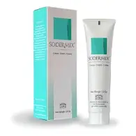 | Sodermix cream merupakan krim yang mengandung ekstrak solanum likopersikum 2%. Sodermix cream bekerja dengan mengurangi sintesis dan sekresi sitokin serta extraxelluar matrix proteins, sehingga dapat menekan pruritus yang sering dikaitkan dengan keloid dan bekas luka hiperpropis, dapat juga mengurangi peradangan yang muncul. Sodermix cream secara bertahap mampu meratakan, menghaluskan, melembutkan bekas luka. Jika terjadi iritasi, kemerahan, dan nyeri hentikan pemakaian dan segera konsultasi kepada dokter. | 2 | |||
87 | TUDERM CREAM 5GR | 918 | 15,500.00 |  | TUDERM N CR 5G adalah obat yang digunakan untuk mengobati penyakit kulit seperti manifestasi inflamasi dan pruritus pada psoriasis resisten atau berat dan dermatosis yang peka terhadap obat golongan kortikosteroid. Tuderm N cream mengandung Betamethasone, obat yang termasuk golongan kortikosteroid, dan neomycin sulfate, obat yang termasuk antibiotik golongan aminoglikosida. | 5 | |||
88 | VISANCORT CREAM 10 GR | 970 | 20,000.00 |  | Visancort adalah obat untuk mengobati penyakit kulit, seperti jerawat, eksim, dermatitis, dan penyakit kulit lain yang peka terhadap kortikosteroid. Obat ini mengandung hydrocortisone, golongan kortikosteroid yang bekerja dengan mengurangi reaksi sistem kekebalan tubuh berlebihan terhadap peradangan. Pada akhirnya, gejala akibat peradangan tersebut bisa mereda. Selain kandungan kortikosteroid untuk meredakan masalah pada kulit, Visancort juga mengandung iodochlorohydroxyquinoline dan camphor. | OBAT KERAS | 12 | ||
89 | CENTABIO GEL 20 GR | 171 | 34,500.00 |  | CENTABIO GEL 20 G adalah obat yang digunakan untuk membantu penyembuhan luka bakar, borok kronis, dan cacat kulit yang disertai infeksi bakteri tertentu. Centabio mengandung neomycin yang bekerja dengan cara mengikat secara reversibel terhadap sub unit 30s dari ribosom bakteri sehingga menghambat sintesa protein yang pada akhirnya menghambat pertumbuhan bakteri itu. | OBAT KERAS | 9 | ||
90 | SAGESTAM CREAM 10 GR | 756 | 19,000.00 | 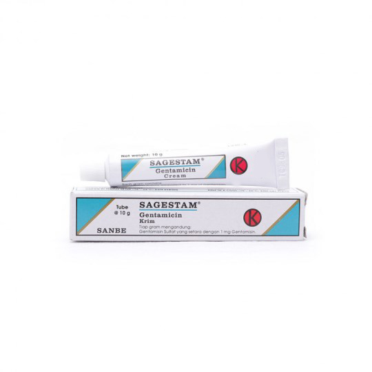 | SAGESTAM 0.1% SALEP merupakan sediaan topikal berbentuk salep yang digunakan untuk mengobati penyakit kulit akibat infeksi oleh bakteri yang peka. Sagestam mengandung Gentamicin yang termasuk golongan antibiotik aminoglikosida yang digunakan secara luas terutama untuk mengobati infeksi-infeksi yang disebabkan oleh bakteri gram negatif, seperti Pseudomonas, Proteus, Serratia, dan Staphylococcus. Gentamicin juga digunakan untuk septikemia (keracunan darah oleh bakteri patogenik dan atau zat-zat yang dihasilkan oleh bakteri tersebut), meningitis (radang selaput otak), infeksi saluran kemih, saluran pernafasan, saluran pencernaan, infeksi pada kulit, tulang, dan jaringan lunak | OBAT KERAS | 49 | ||
91 | LICOVIR CREAM 5 G | 462 | 8,000.00 |  | Licovir adalah obat oles untuk mengatasi infeksi virus herpes simpleks di bibir maupun alat vital. Dengan menggunakan obat ini, ruam lepuh atau luka terbuka akibat herpes dapat sembuh lebih cepat. Licovir terbuat dari bahan aktif acyclovir. Bahan tersebut menghambat produksi enzim tertentu yang dibutuhkan virus herpes untuk memperbanyak diri. Dengan cara kerja tersebut, jumlah virus herpes di kulit bisa terkendali dan dapat dilawan oleh sistem kekebalan tubuh. | OBAT KERAS | 17 | ||
92 | ELOX CR 5GR | 262 | 65,499.99 | 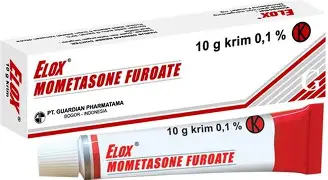 | ELOX 0.1% CREAM 10 G digunakan untuk mengobati kondisi kulit seperti eksim (bengkak dan kemerahan pada kulit), psoriasis (peradangan kronis pada kulit), alergi, dan ruam. | OBAT KERAS | 37 | ||
93 | KLODERMA OINT 5GR | 431 | 33,000.00 |  | Kloderma adalah obat yang bermanfaat untuk meredakan gejala peradangan pada kulit, seperti ruam, gatal, kemerahan, dan bengkak. Beberapa penyakit radang kulit yang bisa diatasi dengan Kloderma adalah eksim, psoriasis, dermatitis, lichen planus, atau lupus. Kloderma mengandung bahan aktif clobetasol dengan kadar 0,05%. Obat oles ini mampu mengaktifkan zat alami di dalam kulit yang bisa mengurangi gejala akibat peradangan. | OBAT KERAS | 2 | ||
94 | PIROFEL GEL | 666 | 27,500.00 |  | PIROFEL adalah gel yang mengandung Piroxicam 0.5%. Piroxicam merupakan golongan obat Anti-Inflamasi Non Steroid (AINS) yang bekerja dengan cara menghambat kerja enzim siklooksigenase-1 (COX-1). Enzim ini berfungsi membantu pembentukan prostaglandin saat luka yang menyebabkan rasa sakit dan peradangan. Dengan terhalanginya kerja enzim COX-1, enzim prostaglandin diproduksi lebih sedikit. Oleh karena itu, rasa sakit dan peradangan dapat berkurang. | OBAT KERAS | 4 | ||
95 | NEBACETINE POWDER 5 GR | 584 | 34,000.00 | 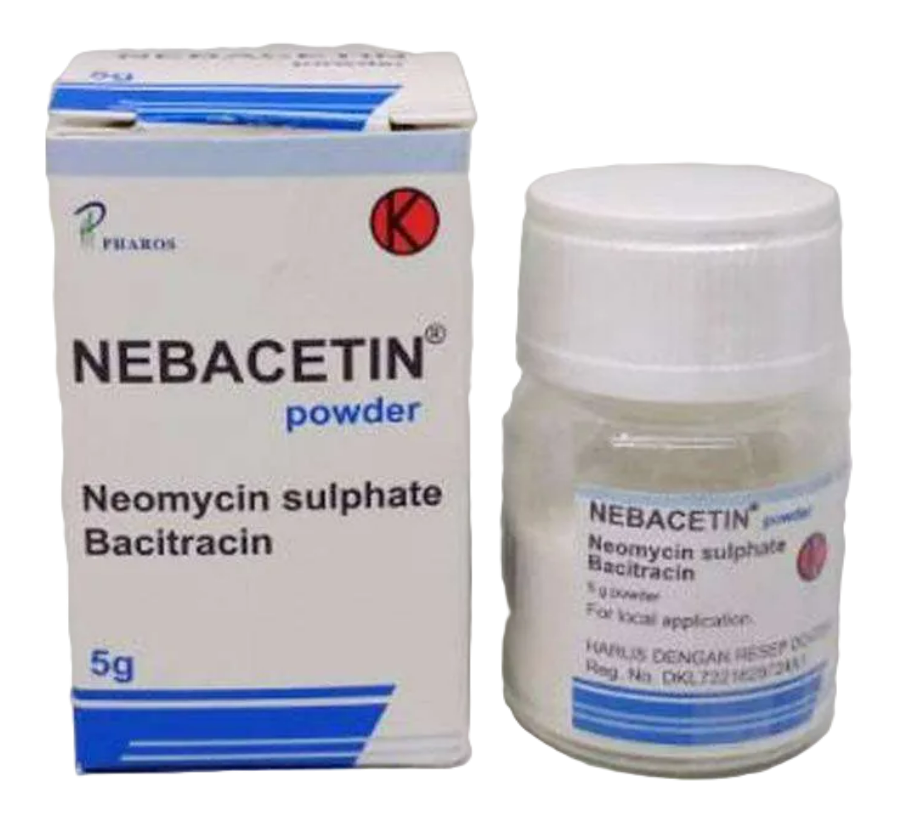 | NEBACETIN POWDER adalah obat antibiotik topikal dalam bentuk serbuk tabur. Produk ini digunakan untuk mencegah dan mengobati infeksi kulit superfisial (permukaan) yang disebabkan oleh bakteri. Obat ini bekerja melalui kombinasi sinergis dari dua antibiotik. Neomycin Sulfate adalah antibiotik golongan aminoglikosida yang bekerja dengan menghentikan produksi protein esensial yang dibutuhkan bakteri untuk bertahan hidup dan berkembang biak; utamanya efektif melawan bakteri Gram-negatif. Sementara itu, Bacitracin bekerja dengan merusak dan menghambat pembentukan dinding sel, yaitu lapisan pelindung vital bagi bakteri, sehingga bakteri tidak dapat bertahan dan akan mati; utamanya efektif melawan bakteri Gram-positif. Kombinasi keduanya memberikan spektrum aksi yang luas untuk menargetkan berbagai jenis bakteri yang umum ditemukan pada infeksi kulit. | OBAT KERAS | 4 | ||
96 | NEBACETIN OINT 5GR | 583 | 31,500.00 |  | NEBACETIN SALEP adalah obat antibiotik topikal yang digunakan untuk mencegah dan mengobati infeksi bakteri pada kulit. Obat ini bekerja melalui kombinasi sinergis dari dua antibiotik. Neomycin Sulfate adalah antibiotik golongan aminoglikosida yang bekerja dengan menghentikan produksi protein esensial yang dibutuhkan bakteri untuk bertahan hidup dan berkembang biak; utamanya efektif melawan bakteri Gram-negatif. Sementara itu, Bacitracin bekerja dengan merusak dan menghambat pembentukan dinding sel, yaitu lapisan pelindung vital bagi bakteri, sehingga bakteri tidak dapat bertahan dan akan mati; utamanya efektif melawan bakteri Gram-positif. | OBAT KERAS | 3 | ||
97 | LUSANOC TAB | 478 | 6,500.00 |  | Lusanoc adalah obat untuk mengatasi infeksi jamur yang menyerang organ dalam tubuh (sistemik), seperti blastomikosis, coccidioidomycosis, atau histoplasmosis. Obat ini juga kerap digunakan pada penderita infeksi jamur kulit yang tidak sembuh dengan ketoconazole obat oles atau griseofulvin. Lusanoc mengandung 200 mg ketoconazole. Obat antijamur jenis azole ini bekerja dengan cara menghentikan produksi ergosterol yang merupakan senyawa pembentuk dinding sel jamur. Efeknya, pertumbuhan dan perkembangan jamur akan terganggu sehingga infeksi pun mereda. | OBAT KERAS | 95 | ||
98 | MYCOZOL CREAM 10 GR | 566 | 32,000.00 |  | MYCOZOL 2% CREAM 10 G adalah sediaan topikal antijamur golongan imidazol yang efektif digunakan untuk mengatasi infeksi jamur pada kulit. Produk ini mengandung Miconazole Nitrate 2%, yang bekerja dengan menghambat biosintesis ergosterol pada jamur, komponen penting pada membran sel jamur, sehingga mengganggu integritas membran dan menyebabkan nekrosis sel jamur. Krim ini secara umum diindikasikan untuk pengobatan berbagai kondisi infeksi kulit yang disebabkan oleh fungi seperti Trichophyton, Epidermophyton, Microsporum, Candida, dan Malessezia furfur. Contoh infeksi yang dapat ditangani meliputi tinea pedis (kutu air), tinea cruris (gatal pada selangkangan), tinea corporis (kurap), dan kandidiasis kulit. | OBAT BEBAS TERBATAS | 14 | ||
99 | METCOVAZIN CREAM 10GR | 525 | 41,000.00 |  | Metcovazin Salep Green merupakan salep kulit yang mengandung bahan aktif Chitosan + Zinc oxide. Salep ini digunakan untuk menjaga kelembaban dan membantu penyembuhan luka di kulit | 1 | |||
100 | BUFACOMB CREAM 5 GR | 106 | 39,000.00 |  | Bufacomb adalah obat oles untuk mengatasi peradangan atau luka di bibir, gusi, dan bagian dalam mulut. Obat berbentuk krim ini dapat mengurangi keluhan perih dan bengkak pada sariawan yang timbul karena tergigit, tergesek kawat gigi, atau tersodok sikat gigi. Dalam 1 gr krim Bufacomb terkandung 1 mg triamcinolone acetonide. Bahan aktif ini bekerja dengan cara mengurangi produksi zat penyebab radang ketika bibir, gusi, atau bagian dalam mulut terluka. Dengan begitu, keluhan nyeri, kemerahan, dan bengkak di lokasi tersebut bisa mereda. | OBAT KERAS | 13 | ||
101 | FUSON CREAM 5GR | 339 | 81,500.00 |  | FUSON CREAM adalah obat antibiotik topikal yang digunakan untuk mengobati infeksi kulit primer dan sekunder yang disebabkan oleh bakteri. Informasi Umum Terkait Kandungan*: *Informasi ini bersifat edukatif dan tidak dimaksudkan sebagai klaim manfaat langsung dari produk. Obat ini mengandung Asam Fusidat (Fusidic Acid), suatu antibiotik yang bekerja dengan cara menghambat sintesis protein pada bakteri. Dengan mengganggu proses ini, Asam Fusidat menghentikan pertumbuhan dan perkembangbiakan bakteri yang sensitif terhadapnya, terutama bakteri Gram-positif seperti Staphylococcus aureus. | OBAT KERAS | 3 | ||
102 | FLAMAR EMULGEL 20 GR | 312 | 25,500.00 | FLAMAR GEL merupakan sediaan emulgel yang mengandung Natrium diklofenak. Natrium Diklofenak Gel adalah obat luar golongan antiinflamasi nonsteroid (OAINS) yang digunakan untuk meredakan nyeri dan peradangan pada otot, sendi, atau akibat cedera ringan seperti keseleo, terkilir, atau nyeri punggung. | OBAT BEBAS TERBATAS | 6 | |||
103 | DAKTARIN CREAM 10GR | 213 | 51,000.00 | 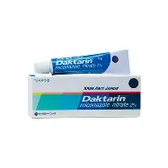 | Daktarin adalah obat antijamur topikal yang mengandung miconazole nitrate. Obat ini tersedia dalam bentuk krim, gel, lotion, dan bedak. Miconazole termasuk dalam golongan imidazole yang bekerja menghambat pertumbuhan dan membunuh jamur penyebab infeksi kulit. | OBAT BEBAS | 3 | ||
104 | GASTRINAL SUSP 120ML | 343 | 34,500.00 |  | GASTRINAL HD SUSPENSI merupakan obat dengan kandungan Hydrotalcite, Magnesium hydroxide, dan Simethicone. Obat ini digunakan untuk meringankan gejala-gejala yang berhubungan dengan kelebihan asam lambung, gastritis, tukak lambung, tukak usus 12 jari. | OBAT BEBAS | 54 | ||
105 | MUCIFAT SUSPENSI 100ML | 553 | 65,499.99 | 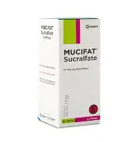 | Mucifat Suspensi 100 Ml bermanfaat untuk mengatasi tukak lambung, ulkus duodenum, atau gastritis kronis. Mucifat Suspensi 100 Ml bekerja dengan cara menempel di bagian lambung atau usus yang luka dan melindunginya dari asam lambung, enzim pencernaan, dan garam empedu, sehingga membantu penyembuhan ulkus. | OBAT KERAS | 229 | ||
106 | PERIFLUX SUSP 60ML | 658 | 51,000.00 | Periflux adalah obat dengan kandungan Domperidone yang diindikasikan untuk pasien yang mengalami mual dan muntah. Periflux merupakan obat golongan antiemetik atau anti mual yang bekerja dengan cara menekan rasa mual dan muntah di sistem saraf pusat dengan menghambat reseptor dopamin perifer. | OBAT KERAS | 44 | |||
107 | VOMETA DROPS 10 ML | 978 | 79,500.00 |  | Vometa 5 Mg Drops 10 Ml bermanfaat untuk meredakan mual dan muntah, serta mengatasi gangguan saluran cerna, seperti gastroparesis. Vometa 5 Mg Drops 10 Ml bekerja dengan mempercepat gerakan saluran pencernaan, sehingga makanan di dalam lambung lebih cepat menuju usus. Dengan begitu, rasa mual dapat berkurang. | OBAT KERAS | 2 | ||
108 | LACOLDIN SYR 60ML | 440 | 36,000.00 |  | Lacoldin Sirup digunakan untuk membantu meredakan gejala flu, seperti demam, pilek, sakit kepala, hidung tersumbat, dan bersin-bersin yang disertai batuk | OBAT BEBAS TERBATAS | 34 | ||
109 | LAPISIV SYR 100ML | 449 | 38,000.00 |  | Lapisiv Sirup adalah obat yang mengandung Diphenhydramine HCl, Dextromethorphan HBr, Phenylpropanolamine HCl, Ammon Cl, Glyceryl guaiacolate, Na citrate, Menthol yang digunakan untuk meredakan batuk dan pilek yang disertai dengan alergi | OBAT BEBAS TERBATAS | 47 | ||
110 | ANDONEX SYR 100ML | 32 | 31,000.00 |  | Andonex adalah obat yang digunakan untuk mengobati batuk berdahak kental, batuk alergi, atau batuk karena rangsangan pada selaput pernapasan. Andonex mengandung Glyceryl Guaiacolat yang berfungsi untuk membantu mengeluarkan dahak, Diphenhydramine HCl berfungsi sebagai antialergi, Dextromethorphan HBr berfungsi sebagai penekan batuk, Phenylephrine berfungsi untuk melegakan hidung tersumbat, dan ipecac tinct yang berfungsi untuk membantu mengencerkan dahak. | OBAT BEBAS TERBATAS | 35 | ||
111 | SOLVINEX SYR 100ML | 834 | 22,000.00 |  | Solvinex adalah obat untuk membantu mengencerkan dahak di saluran pernapasan sehingga lebih mudah dikeluarkan. Obat ini biasanya digunakan untuk meredakan batuk berdahak akibat bronkitis atau infeksi saluran napas lainnya. Solvinex mengandung bromhexine hydrochloride, yaitu zat aktif yang memecah serat pada dahak. Hal ini membuat lendir kental menjadi lebih cair dan mudah dikeluarkan saat batuk. Obat ini bisa digunakan oleh dewasa maupun anak-anak jika ada produksi dahak berlebihan akibat infeksi atau peradangan saluran napas. | OBAT BEBAS TERBATAS | 9 | ||
112 | MUCOS SYR | 556 | 22,500.00 |  | Mucos Sirup bermanfaat untuk mengatasi batuk berdahak dan gangguan pernapasan lain akibat produksi dahak yang berlebihan, seperti pada penyakit bronkiektasis. Mucos Sirup membantu mengencerkan dahak agar lebih mudah dikeluarkan dari tenggorokan saat batuk. Dengan begitu, saluran pernapasan lebih terbuka dan terasa lega. | OBAT KERAS | 5 | ||
113 | DOSIVEC SYR 60 ML | 248 | 57,000.00 | 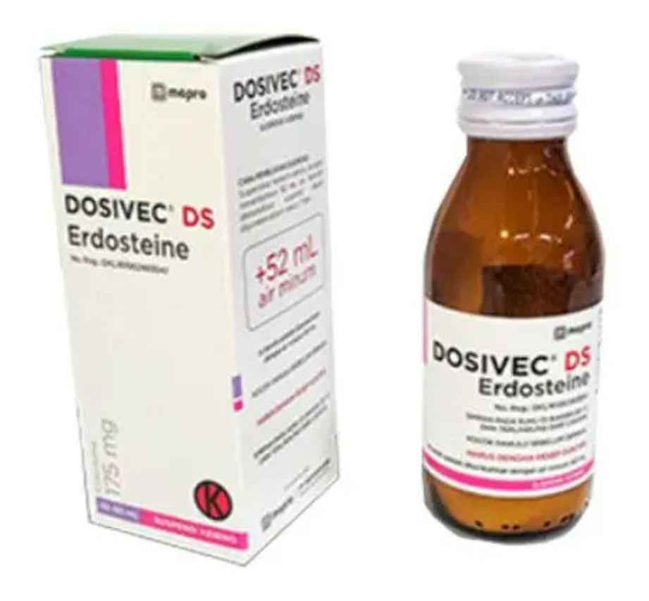 | Dosivec adalah obat untuk meredakan batuk berdahak. Obat dengan kandungan erdosteine ini digunakan untuk bantu mengatasi keluhan pada kondisi bronkitis kronis atau bronkitis akut. Kandungan erdosteine yang ada di dalam Dosivec bekerja untuk mengencerkan dahak yang ada di saluran pernapasan. Dengan demikian, dahak menjadi lebih mudah untuk dikeluarkan ketika batuk. | OBAT KERAS | 12 | ||
114 | LASAL EXP SYR 100 ML | 451 | 67,999.99 |  | Lasal Ekspektoran Sirup 100 Ml bermanfaat untuk melegakan pernapasan dan membantu mengeluarkan dahak pada kondisi asma atau batuk karena asma. Kandungan salbutamol dalam obat ini membantu melemaskan otot-otot di sekitar saluran pernapasan yang menyempit. Sedangkan, kandungan guaifenesin bekerja dengan cara mengencerkan dahak. | OBAT KERAS | 27 | ||
115 | TEMPRA DROP 15 ML | 889 | 56,500.00 |  | Tempra Drop Rasa Anggur bermanfaat untuk menurunkan demam, termasuk demam akibat imunisasi, serta rasa nyeri, seperti pada sakit kepala atau sakit gigi. Tempra Drop Rasa Anggur mengandung paracetamol. Obat ini bekerja pada otak untuk menurunkan suhu tubuh dan meningkatkan toleransi terhadap nyeri. Pada umumnya, Tempra ditujukan untuk anak-anak. Meski begitu, orang dewasa juga dapat mengonsumsinya bila bentuk sediaan lain tidak memungkinkan. | OBAT BEBAS | 6 | ||
116 | TEMPRA SYR 60 ML | 890 | 52,500.00 |  | Tempra Syrup 60 Ml bermanfaat untuk menurunkan demam dan meredakan nyeri, seperti sakit kepala dan sakit gigi. Tempra Syrup 60 Ml bekerja dengan cara mengurangi produksi zat penyebab peradangan, yaitu prostaglandin. Penurunan kadar prostaglandin di dalam tubuh akan membuat tanda peradangan seperti demam dan nyeri berkurang. | OBAT BEBAS | 9 | ||
117 | RHELAFEN FORTE SUSP 60ML | 739 | 41,500.00 | 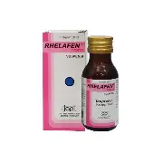 | Rhelafen Forte Sirup bermanfaat meredakan demam, dan mengurangi rasa nyeri akibat sakit gigi, sakit kepala, nyeri otot, nyeri pasca operasi, nyeri akibat cabut gigi, dan nyeri penyakit rematik. Rhelafen Forte Sirup mengandung ibuprofen. Ibuprofen bekerja dengan cara menghambat pembentukan prostaglandin, yaitu zat kimia yang memicu timbulnya tanda dan gejala radang, termasuk nyeri, bengkak, atau demam. | OBAT BEBAS TERBATAS | 3 | ||
118 | RHELAFEN SUSP 60ML | 740 | 31,000.00 | 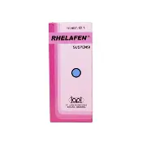 | Rhelafen Suspensi 60 Ml bermanfaat untuk meredakan nyeri haid, sakit gigi, nyeri sendi, atau sakit kepala. Obat ini juga bisa digunakan untuk menurunkan demam. Rhelafen Suspensi 60 Ml mengandung ibuprofen yang bekerja dengan cara menghambat produksi prostaglandin, yaitu zat kimia di dalam tubuh yang menyebabkan munculnya gejala peradangan, termasuk nyeri dan bengkak, saat tubuh mengalami luka atau cedera. | OBAT BEBAS TERBATAS | 3 | ||
119 | PYRIDOL SYR 60ML | 722 | 40,000.00 |  | Pyridol 120 mg Sirup bermanfaat untuk menurunkan demam dan meredakan nyeri, seperti sakit kepala dan sakit gigi. Pyridol 120 mg Sirup bekerja dengan cara mengurangi produksi zat penyebab peradangan, yaitu prostaglandin. Penurunan kadar prostaglandin di dalam tubuh akan membuat tanda peradangan seperti demam dan nyeri berkurang. | OBAT BEBAS | 3 | ||
120 | NORAGES SYR 60 ML | 608 | 44,000.00 | 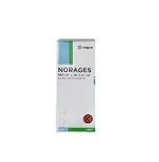 | NORAGES SIRUP merupakan obat yang di gunakan untuk meredakan sakit derajat sedang hingga berat, seperti sakit gigi, sakit kepala, nyeri haid, sakit punggung, nyeri kolik, pasca operasi, dan lain-lain. Norages mengandung Metamizole, yang bekerja dengan cara menghalangi sintesis pirogen endogen sehingga metamizole memiliki efek analgetik dan juga antiperadangan. | OBAT KERAS | 150 | ||
121 | CENDO XITROL SALEP MATA 3,5GR | 169 | 49,000.00 |  | CENDO XITROL SALEP MATA 3.5 G adalah salep mata steril yang mengandung kombinasi antibiotik (Neomycin dan Polymyxin B) dan kortikosteroid (Dexamethasone). Informasi Umum Terkait Kandungan: Neomycin dan Polymyxin bekerja sinergis sebagai agen antibakteri spektrum luas untuk membasmi bakteri. Sementara Dexamethasone berfungsi sebagai anti-inflamasi kuat untuk menekan peradangan dan gejala alergi. Kombinasi ini efektif untuk mengobati peradangan pada mata yang disebabkan oleh infeksi bakteri. | OBAT KERAS | 3 | ||
122 | CENDO TOBROSON MINIDOSE | 166 | 40,000.00 | 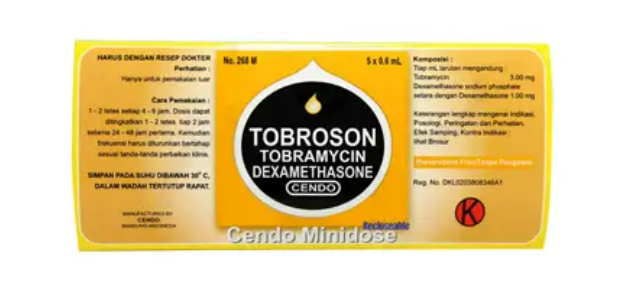 | CENDO TOBROSON MINIDOSE adalah obat tetes mata yang mengandung tobramycin sebagai antibiotik aminoglikosida yang di gunakan untuk mengobati infeksi akibat bakteri. Dalam mengobati infeksi tobramycin bekerja dengan cara membunuh bakteri dan menekan pertumbuhannya agar tidak muncul kembali. Cendo tobroson juga mengandung dexamethasone yang bekerja dengan menghambat respon inflamasi sehingga dapat membantu dalam meredakan peradangan pada mata. | OBAT KERAS | 3 | ||
123 | CENDO PANTOCAIN 0.5% 5ML | 156 | 17,000.00 |  | CENDO PANTOCAIN 0.5% 5ML merupakan obat dengan kandungan zak aktif Tetracaine / Tetrakain 0.5%. dalam bentuk Tetes Mata yang mempunyai efek kerja sebagai Anestesi lokal pada mata | OBAT KERAS | 2 | ||
124 | CENDO PANTOCAIN 2% 5ML | 158 | 18,500.00 | 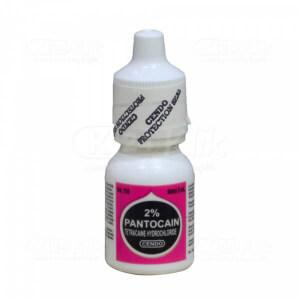 | CENDO PANTOCAIN 2% 5ML merupakan obat dengan kandungan zak aktif Tetracaine / Tetrakain 2%. dalam bentuk Tetes Mata yang mempunyai efek kerja sebagai Anestesi lokal pada mata | OBAT KERAS | 2 | ||
125 | FINPRO TAB 5MG | 302 | 21,999.99 |  | obat yang digunakan untuk mengatasi pembesaran prostat jinak atau benign prostatic hyperplasia. Obat berbahan aktif finasteride ini juga bermanfaat untuk menangani kebotakan pada pria akibat kelebihan hormon androgen. | OBAT KERAS | 51 | ||
126 | ARINIA 5MG TAB | 43 | 20,500.00 |  | Arinia adalah obat produksi Meprofarm yang mengandung Aripiprazole sebagai zat aktifnya. Arinia digunakan untuk membantu mengatasi penyakit bipolar dan skizofrenia. | OBAT KERAS | 10 | ||
127 | PIBAKSIN OINT 10 GR | 661 | 63,000.00 |  | PIBAKSIN 2% SALEP mengandung mupirocin yang di gunakan untuk mengatasi kulit impetigo atau infeksi kulit lainnya yang di sebabkan oleh bakteri taphylococcus.Mupirocin merupakan salah satu antibiotik golongan karbapenem, yang memiliki sifat bakteriostatik dan bekerja dengan menghambat sintesis protein dari bakteri dengan mengikat asam transfer ribonucleid acid (RNA) synthetase. | OBAT KERAS | 19 | ||
128 | MYCORINE POWDER 25GR | 565 | 61,500.00 |  | Mycorine Powder 25 gr adalah obat yang digunakan untuk mengobati penyakit kulit akibat infeksi jamur, mycorine mengandung miconazole mengikat fosfolipid dalam membran sel dan menghambat biosintesis ergosterol dan sterol lain yang diperlukan untuk produksi membran sel. Hal ini menyebabkan kematian sel melalui hilangnya unsur intraseluler. | OBAT BEBAS TERBATAS | 11 | ||
129 | BETADINE SALEP 5 GR | 75 | 17,500.00 |  | Betadine 10 % Salep 5 g adalah obat luar dalam bentuk salep antiseptik yang mengandung bahan aktif Povidone-Iodine. Produk ini berfungsi untuk membantu mencegah infeksi pada luka. Mekanisme kerjanya adalah dengan melepaskan yodium (iodine) secara perlahan, yang merupakan zat antimikroba dengan spektrum luas. Produk ini hanya untuk penggunaan luar tubuh. | 2 | |||
130 | DAKTARIN CREAM 10GR | 213 | 51,000.00 | 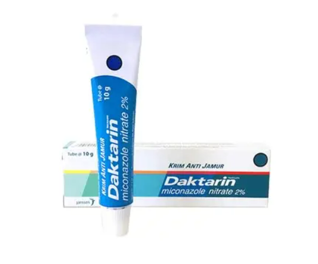 | DAKTARIN CREAM merupakan sediaan topikal atau obat oles kulit yang mengandung zat aktif Miconazole Nitrate. Krim ini digunakan untuk mengobati infeksi kulit yang disebabkan oleh dermatofit atau ragi, dan jamur lainnya. Miconazole bekerja dengan menghancurkan bakteri dan jamur penyebab infeksi. Dengan demikian, maka obat ini digunakan untuk mengatasi penyakit infeksi kulit yang diakibatkan oleh berbagai jenis jamur serta infeksi yang disebabkan karena bakteri gram positif. | OBAT BEBAS TERBATAS | 3 | ||
131 | EXELCARE HYDROGEL SILVER PLUS AG | 278 | 129,500.00 | 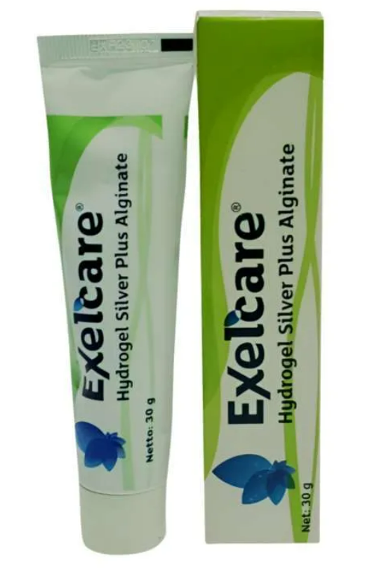 | Exelcare Hydrogel Silver Plus Alginate 30 g merupakan produk kesehatan dalam bentuk gel kombinasi dari hydrogel sebagai suport autolisis pada jaringan nekrotik, ditambah kombinasi silver serta alginate yang dapat digunakan pada luka-luka infeksi. | 4 | |||
132 | INODERM CREAM 10GR | 400 | 21,500.00 | 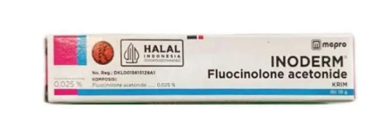 | Inoderm Krim merupakan obat dengan kandungan zat aktif Fluocinolone Acetonide 0,25% dalam bentuk krim yang mempunyai efek kerja sebagai obat untuk meredakan manifestasi peradangan dan pruritus dari dermatosis yang responsif terhadap kortikosteroid. | OBAT KERAS | 3 | ||
133 | DIAVERSA TAB 2 MG | 234 | 3,500.00 |  | DIAVERSA TABLET merupakan obat anti diabetes mengandung Glimepiride yang termasuk ke dalam golongan sulfonilurea. Diaversa digunakan sebagai obat anti diabetes mellitus tipe 2 atau Non-Insulin-Dependent (type II) Diabetes Melitus (NIDDM) dimana kadar glukosa darah tidak dapat hanya dikontrol dengan diet dan olahraga saja. | OBAT KERAS | 148 | ||
134 | ALDISA SR CAPSULE | 1378 | 8,500.00 |  | ALDISA SR 10 KAPSUL mengandung Loratadine dan Pseudoephedrine sulfate. Obat ini digunakan untuk mengatasi gejela rhinitis alergi dan flu seperti hidung tersumbat, bersin atau pruritus. Loratadine merupakan long acting non sedatif histamin yang bertindak sebagai inverse agonist selektif histamin perifer H1 reseptor dan Pseudoephedrine (vasokronstriktor, bekerja pada reseptor alpha dan menghasilkan efek dekongestan dengan mengurangi mukosa sesak didaerah pernapasan bagian atas. | OBAT KERAS | 111 | ||
135 | VILDI TAB 50MG | 969 | 6,999.99 |  | Vildi adalah obat untuk menurunkan kadar gula darah pada penderita diabetes tipe 2, terutama yang kadar gulanya tidak bisa dikontrol dengan diet dan olahraga saja. Obat berbahan aktif vildagliptin ini dapat digunakan sebagai terapi tunggal atau dikombinasikan dengan obat antidiabetes lain, seperti metformin. Tiap tablet Vildi mengandung vildagliptin sebanyak 50 mg. Vildagliptin bekerja dengan cara meningkatkan respons pankreas untuk memproduksi insulin ketika kadar gula darah tinggi, misalnya setelah makan, sehingga kadar gula darah bisa lebih terkontrol. | OBAT KERAS | 179 | ||
136 | TUDIAB TAB | 919 | 2,500.00 |  | Tudiab merupakan obat dengan kandungan metformin. Metformin adalah obat antidiabetes generik yang digunakan untuk mengontrol dan menurunkan kadar gula darah pada penderita diabetes tipe 2. Metformin termasuk obat antidiabetes golongan Biguanide, bekerja dengan cara menghambat produksi glukosa (glukoneogenesis) di hati. Penghambatan tersebut mengakibatkan terjadinya penundaan absorbsi atau penyerapan glukosa di usus, sehingga menurunkan glukosa plasma baik basal maupun postprandial (setelah makan). Selain itu, Metformin juga bekerja dengan memperbaiki sensitivitas insulin dengan cara meningkatkan ambilan dan penggunaan glukosa di jaringan perifer. Dengan demikian, maka akan terjadi perbaikan toleransi glukosa pada pasien diabetes tipe 2. Obat ini dapat dikonsumsi secara tunggal, dikombinasikan dengan obat antidiabetes lain, atau diberikan bersama insulin. | OBAT KERAS | 75 | ||
137 | DIAMICRON TAB MR 60MG | 233 | 10,500.00 |  | Diamicron adalah obat diabetes berbahan aktif gliclazide. Diamicron bermanfaat untuk menstabilkan kadar gula darah pada penderita diabetes tipe 2. Penggunaan Diamicron secara rutin sesuai arahan dokter dapat menekan risiko terjadinya komplikasi diabetes, seperti penyakit jantung, stroke, atau gagal ginjal. Gliclazide pada Diamicron masuk dalam daftar obat antidiabetes golongan sulfonilurea. Gliclazide bekerja merangsang pankreas untuk memproduksi lebih banyak insulin sekaligus mengoptimalkan kerja hormon tersebut. | 64 | |||
138 | LAPIGIM 2/500 TAB | 448 | 9,000.00 |  | LAPIGIM KAPLET merupakan obat anti diabetes kombinasi yang terdiri dari Metformin (antidiabetes oral golongan biguanid) dan Glimepiride (antidiabetes oral golongan sulfonilurea). Obat ini digunakan untuk pengobatan diabetes mellitus tipe 2. Lapigim digunakan dengan diet dan olahraga, untuk mengobati DM Tipe 2 ketika penggunaan glimepiride atau metformin saja tidak menghasilkan kontrol glikemik yang adekuat. Obat ini juga digunakan sebagai pengganti terapi kombinasi glimepiride dan metformin. | OBAT KERAS | 384 | ||
139 | DIAVERSA TAB 4 MG | 235 | 5,499.88 | Diaversa adalah obat antidiabetik yang dikemas dalam bentuk sediaan tablet. Diaversa mengandung glimepiride yang digunakan untuk mengontrol kadar gula darah yang tinggi pada penderita diabetes tipe 2. Diaversa dapat dikombinasikan dengan obat diabetes lainnya. Dengan mengontrol gula darah tinggi dapat membantu mencegah kerusakan ginjal, kebutaan, masalah saraf, stroke dan masalah fungsi seksual. Kontrol yang tepat pada pasien diabetes juga dapat mengurangi risiko serangan jantung. Diaversa bekerja dengan menurunkan kadar gula darah dalam tubuh melalui pelepasan insulin alami tubuh. | OBAT KERAS | 1048 | |||
140 | XIGDUO XR 10/500 MG TAB | 1363 | 29,499.99 |  | Xingduo XR adalah obat yang mengandung dapagliflozin propanediol monohydrate dan metformin. Xingduo XR berfungsi untuk memberikan mengontrol kadar gula darah pada pasien yang memiliki respon buruk terhadap penggunaan metformin monoterapi. Obat ini digunakan untuk membantu mengontrol kadar gula darah pada pasien Diabetes Mellitus tipe 2 yang tidak teratasi dengan diet dan olahraga. Dapagliflozin bekerja dengan cara menghambat penyerapan kembali glukosa di tubuli distal ginjal dengan cara menghambat kinerja transporter glukosa SGLT-2, sedangkan Metformin bekerja dengan cara menambah sensitivitas terhadap insulin. | OBAT KERAS | 28 | ||
141 | EZERO 10/10 MG TAB | 1365 | 30,500.00 | 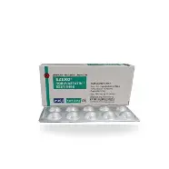 | EZERO 10/10MG TABLET digunakan untuk mengontrol kolesterol dan trigliserida sehingga dapat mengurangi risiko penyakit kardiovaskular (jantung dan pembuluh darah). Obat ini memiliki kandungan bahan aktif Rosuvastatin dan Ezetimibe. Rosuvastatin termasuk obat golongan inhibitor reductase HMG CoA atau statin yang bekerja dengan cara mengurangi pembentukan kolesterol oleh hati sehingga kadar kolesterol di dalam darah terkendali. Sedangkan Ezetimibe bekerja dengan menghambat penyerapan lemak di usus. Ezero dapat dikonsumsi sebelum atau sesudah makan. | OBAT KERAS | 30 | ||
142 | SOLVINEX SOLUTION 30ML/1CC | 833 | 2,500.00 |  | Solvinex adalah obat untuk membantu mengencerkan dahak di saluran pernapasan sehingga lebih mudah dikeluarkan. Obat ini biasanya digunakan untuk meredakan batuk berdahak akibat bronkitis atau infeksi saluran napas lainnya. Solvinex Larutan 30 ml, dengan kandungan 2 mg bromhexine dalam tiap 1 ml nya Solvinex mengandung bromhexine hydrochloride, yaitu zat aktif yang memecah serat pada dahak. Hal ini membuat lendir kental menjadi lebih cair dan mudah dikeluarkan saat batuk. Obat ini bisa digunakan oleh dewasa maupun anak-anak jika ada produksi dahak berlebihan akibat infeksi atau peradangan saluran napas. | 172 | |||
143 | MEPROVENT INHALASI | 522 | 11,499.99 | 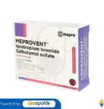 | Meprovent Cairan Inhalasi merupakan obat dengan kandungan zat aktif tiap 2.5 ml mengandung Ipratropium Br 0.5 mg, salbutamol 2.5 mg dalam bentuk cairan infeksi yang mempunyai efek kerja sebagai bronkospasme yang disebabkan oleh penyakit paru obstruktif & serangan asma akut pada pasien dengan & 1 terapi bronkodilator. | OBAT KERAS | 43 | ||
144 | BUDESMA 0,5 NEBUL | 105 | 26,500.00 |  | Budesma adalah obat untuk mencegah serangan asma. Obat dalam sediaan cair ini digunakan dengan nebulizer. Budesma hanya boleh digunakan di bawah pengawasan dokter. Budesma mengandung budesonide, yang bekerja dengan cara meredakan peradangan di saluran pernapasan. Dengan begitu, pernapasan menjadi lebih lega dan kambuhnya asma bisa dicegah. Obat ini digunakan dengan nebulizer, yang mengubah cairan obat menjadi uap untuk dihirup. Cara penggunaan Budesma akan membuat kandungan obat lebih mudah masuk ke jalur napas yang menyempit akibat peradangan, seperti asma atau PPOK. | OBAT KERAS | 119 | ||
145 | LASAL NEBUL 2,5 MG/2,5 ML | 452 | 16,500.00 |  | LASAL NEBU adalah obat sediaan larutan inhalasi steril yang mengandung zat aktif Salbutamol Sulfate. Salbutamol termasuk dalam golongan bronkodilator kerja cepat (short-acting beta-2 adrenergic agonist). Obat ini bekerja secara spesifik dengan cara merelaksasi otot-otot polos di sekitar saluran pernapasan (bronkus), sehingga saluran napas yang menyempit menjadi lebih lebar (bronkodilatasi). Efek ini membuat udara dapat mengalir lebih lancar ke dalam paru-paru, sehingga napas menjadi lega. Lasal Nebu digunakan dengan alat nebulizer untuk mengatasi sesak napas atau mengi secara cepat. | OBAT KERAS | 211 | ||
146 | DEMACOLIN TABLET STRIP | 216 | 1,500.00 |  | Demacolin bermanfaat untuk mengobati gejala flu atau batuk pilek, seperti demam, sakit kepala, hidung tersumbat, hidung meler, dan bersin-bersin. Demacolin tersedia dalam bentuk tablet dan sirup. Demacolin mengandung paracetamol, pseudoephedrine, dan chlorpheniramine maleate (chlorpheniramine). Kombinasi bahan-bahan ini tidak dapat melawan penyebab infeksi, tetapi dapat meredakan gejala flu yang bisa mengganggu aktivitas penderita. | 520 | |||
147 | LAPISIV-T TAB | 450 | 3,500.00 |  | LAPISIV-T TABLET merupakan obat yang digunakan untuk mengatasi gejala pilek seperti bersin-bersin yang disertai batuk karena alergi | OBAT BEBAS TERBATAS | 1407 | ||
148 | LACOLDIN TAB | 441 | 3,500.00 | 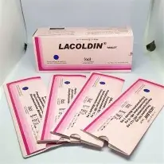 | Lacoldin Tablet digunakan untuk membantu meredakan gejala flu, seperti demam, pilek, sakit kepala, hidung tersumbat, dan bersin-bersin yang disertai batuk. | OBAT BEBAS TERBATAS | 230 | ||
149 | GLYCERYL GUAIACOLATE TAB | 352 | 1,000.00 |  | GUAIFENESIN/ GLYCERYL GUAIACOLATE TABLET merupakan obat jenis ekspektoran yang dapat meredakan batuk dan melancarkan pengeluaran dahak di saluran napas. Obat ini bekerja dengan cara meningkatkan volume dahak dan membuatnya lebih encer sehingga lebih mudah dikeluarkan dari saluran pernapasan melalui jalur nafas dengan proses batuk. | OBAT BEBAS TERBATAS | 305 | ||
150 | PARATUSIN TAB | 649 | 2,500.00 |  | Paratusin adalah obat yang bermanfaat untuk meredakan gejala flu seperti batuk, pilek, demam, sakit kepala, nyeri otot, atau bronkitis. Obat ini tersedia dalam dua sediaan, yaitu tablet dan sirup. | OBAT BEBAS TERBATAS | 168 | ||
151 | PARATUSIN SYR 60 ML | 648 | 47,000.00 |  | Paratusin adalah obat yang bermanfaat untuk meredakan gejala flu seperti batuk, pilek, demam, sakit kepala, nyeri otot, atau bronkitis. Obat ini tersedia dalam dua sediaan, yaitu tablet dan sirup. | OBAT BEBAS TERBATAS | 2 | ||
152 | PROHISTIN TAB 10 MG | 696 | 6,499.99 | 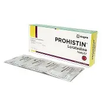 | Prohistin adalah obat untuk meredakan gejala alergi pada pasien rhinitis alergi, eksim, biduran, konjungtivitis alergi, atau alergi makanan. Obat yang mengandung loratadine ini hanya boleh dikonsumsi berdasarkan resep dari dokter. Prohistin mengandung loratadine, yang bekerja dengan cara memblokir histamin, yaitu senyawa pemicu munculnya reaksi alergi di dalam tubuh. Dengan begitu, gejala alergi yang ditandai dengan kulit gatal, bersin, hidung meler, mata berair, hidung atau tenggorokan gatal, bisa teratasi. | OBAT KERAS | 311 | ||
153 | TIRIZ TABLET | 903 | 7,500.00 | 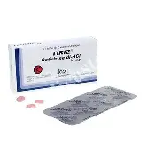 | Tiriz adalah obat yang bermanfaat untuk meredakan gejala alergi, seperti bersin-bersin, mata gatal dan berair, pilek, hidung tersumbat atau meler, atau gatal-gatal dan biduran. Obat ini tersedia dalam bentuk kaplet dan obat tetes oral (drops). Kandungan cetirizine dalam Tiriz merupakan obat golongan antihistamin. Obat ini bekerja dengan cara menghambat produksi histamin ketika tubuh terpapar pemicu alergi. Histamin adalah senyawa yang memicu timbulnya gejala alergi. Dengan dihambatnya histamin, keluhan alergi yang muncul akan mereda. | OBAT KERAS | 652 | ||
154 | PRONICY FILCO TAB 4MG | 703 | 1,000.00 | 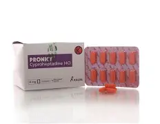 | PRONICY adalah obat antihistamin yang tidak hanya digunakan untuk meredakan gejala alergi, tetapi juga dapat berfungsi sebagai penambah nafsu makan. | OBAT KERAS | 656 | ||
155 | PROCELES TAB | 690 | 4,000.00 |  | Proceles adalah obat yang digunakan untuk meredakan reaksi alergi sedang hingga berat, meliputi ruam gatal pada kulit, mata berair, hidung meler, dan bersin-bersin. Obat ini hanya boleh digunakan sesuai dengan anjuran dokter. Proceles mengandung betametason dan dexchlorpheniramine maleate. Perpaduan kedua bahan tersebut bekerja dengan menghambat senyawa yang diproduksi tubuh saat mengalami peradangan, seperti histamin dan prostaglandin. | OBAT KERAS | 215 | ||
156 | PROCELES SYR 60ML | 689 | 48,000.00 |  | "Proceles adalah obat yang digunakan untuk meredakan reaksi alergi sedang hingga berat, meliputi ruam gatal pada kulit, mata berair, hidung meler, dan bersin-bersin. Obat ini hanya boleh digunakan sesuai dengan anjuran dokter. Proceles mengandung betametason dan dexchlorpheniramine maleate. Perpaduan kedua bahan tersebut bekerja dengan menghambat senyawa yang diproduksi tubuh saat mengalami peradangan, seperti histamin dan prostaglandin." | OBAT KERAS | 68 | ||
157 | OTEDE TAB | 637 | 2,000.00 |  | OTEDE adalah obat antihistamin yang mengandung zat aktif Diphenhydramine 25 mg. Obat ini berfungsi untuk meredakan gejala-gejala yang berkaitan dengan reaksi alergi, seperti hidung tersumbat, bersin, gatal-gatal, dan ruam kulit. Mekanisme kerjanya adalah dengan memblokir reseptor histamin H1 di dalam tubuh, sehingga mencegah histamin menghasilkan respons alergi. Efek ini juga yang menyebabkan rasa kantuk. Oleh karena itu, Sedares harus digunakan dengan hati-hati. Karena efek sedatifnya, obat ini juga dapat digunakan untuk meredakan gejala mabuk perjalanan dan membantu menenangkan sistem saraf, sehingga dapat membantu tidur. | OBAT KERAS | 127 | ||
158 | HEPTASAN TAB 4 MG | 370 | 1,500.00 |  | HEPTASAN 4 MG adalah obat yang digunakan untuk mengobati berbagai jenis alergi. Heptasan mengandung Cyproheptadine Obat ini termasuk golongan antihistamin generasi pertama yang bermanfaat juga sebagai antikolinergik, antiserotonergic, dan sifat anestesi lokal. Cyproheptadine bekerja dengan cara menghambat efek dari histamin sehingga berbagai reaksi alergi itu dapat dikurangi. | OBAT KERAS | 126 | ||
159 | XANTIA LICAPS | 989 | 10,500.00 |  | Xantia adalah suplemen untuk membantu menjaga kesehatan kulit dan mata, serta mendukung daya tahan tubuh. Xantia tersedia dalam bentuk kapsul dan dapat dibeli tanpa resep dokter. Meski demikian, penggunaannya tetap disarankan untuk dikonsultasikan terlebih dahulu dengan dokter. | OBAT BEBAS | 29 | ||
160 | ROSAGEN FORCE SACHET | 751 | 40,500.00 | 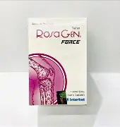 | Rosagen Force merupakan suplemen nutrisi yang diformulasikan khusus untuk mendukung kesehatan sendi, tulang rawan, dan jaringan ikat, serta mengurangi gejala nyeri sendi, kaku, dan peradangan terutama pada penderita osteoartritis atau individu dengan keluhan sendi karena aktivitas fisik atau usia lanjut | SUPLEMEN | 15 | ||
161 | NEURAXON TAB 5000 MG | 594 | 5,000.00 |  | Neuraxon-5000 adalah suplemen kombinasi vitamin B1, B6, dan B12 yang digunakan untuk mengatasi gangguan pada saraf. Informasi Umum Terkait Kandungan: Vitamin B1 (Tiamin) bekerja sebagai koenzim pada proses metabolisme karbohidrat. Vitamin B6 (Piridoksin) berperan dalam metabolisme protein dan asam amino. Vitamin B12 (Sianokobalamin) penting untuk pembentukan sel darah merah dan menjaga fungsi sistem saraf. Kombinasi ketiganya mendukung perbaikan dan pemeliharaan fungsi saraf. | SUPLEMEN | 10 | ||
162 | LABUMIN 500 MG CAP | 439 | 11,000.00 | 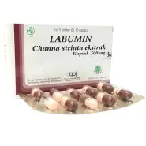 | Labumin merupakan suplemen makanan yang memiliki kandungan ekstrak ikan gabus. Manfaat dari ekstrak ikan gabus yaitu Meningkatkan daya tahan tubuh, Membantu penyembuhan luka operasi lebih cepat, Meningkatkan kadar albumin dan hemoglobin (Hb) dan Nutrisi tambahan. | SUPLEMEN | 77 | ||
163 | TRACETATE TAB | 913 | 37,000.00 | 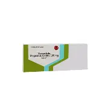 | TRACETATE 160 MG merupakan obat yang di gunakan untuk mengobat kanker payudara atau rahim, Tracetate mengandung Megestrol tergolong sebagai kelas obat kanker yanng di sebut terapi hormon kanker. Hormon yang mirip dengan hormon wanita alami yang di sebut progesteron. Megestrol juga dapat digunakan untuk meningkatkan nafsu makan dan untuk mencegah atau membalikkan penurunan berat badan yang signifikan. | OBAT KERAS | 30 | ||
164 | PROXIDAN LICAPS | 712 | 6,000.00 |  | Proxidan 400 10 Tablet bermanfaat untuk mencegah dan mengatasi kekurangan vitamin E. Proxidan 400 10 Tablet merupakan suplemen makanan yang mengandung D-alpha-tocopherol 400 IU. D-alpha-tocopherol 400 IU merupakan sintetik vitamin E yang bermanfaat sebagai antioksidan. D-alpha-tocopherol 400 IU juga dapat digunakan untuk menutrisi kulit, mengatasi defisiensi vitamin E, serta terapi suportif pada kardiovaskular. Proxidan diproduksi oleh Meprofarm dalam bentuk sediaan licaps. Licaps merupakan hasil dari teknologi inovatif yang salah satunya digunakan untuk cairan yang terbuat dari gelatin. | SUPLEMEN | 77 | ||
165 | KETOS CAP | 1406 | 11,000.00 | Ketos Kaplet merupakan obat dengan kandungan zak aktif Tiap mengandung Alpha-keto-isoleucin Calcium 67 mg, Alpha-keto-leucine Calcium 101 mg, Alpha-keto-phenylalanine Calcium 68 mg, Alpha-keto-valine Calcium 86 mg, Alpha-hydroxy Methionine Calcium 59 mg, Lysine Acetate 105 mg, Threonine 53 mg, Tryptophane 23 mg, Histidine 38 mg, Tyrosine 30 mg dalam bentuk Kaplet yang mempunyai efek kerja sebagai insufisiensi ginjal kronik pada retensi yang terkompensasi atau dekompensasi. | OBAT KERAS | 445 | |||
166 | IMUDATOR TAB | 386 | 13,000.00 | mudator adalah suplemen vitamin dan mineral yang dapat menambah imunitas tubuh. Suplemen ini tersedia dalam bentuk kaplet dan sirup. Imudator mengandung beragam kandungan mulai dari Echinacea purpurea radix extract hingga Phyllantus niruri extract yang mampu merangsang sistem kekebalan. Dengan begitu, tubuh dapat melawan serangan penyakit secara lebih optimal. Selain itu, Imudator bermanfaat untuk mempercepat proses pemulihan dari luka. | SUPLEMEN | 22 | |||
167 | FOLAPLUS KAPLET | 322 | 2,000.00 | Folaplus adalah suplemen untuk ibu hamil yang mengandung asam folat 400 mcg, vitamin B6 6 mg dan vitamin B12 25 mcg. Asam folat berfungsi untuk menambah produksi sel darah merah, vitamin B6 berfungsi untuk menekan mual pada ibu hamil, vitamin B12 berfungsi untuk menjaga kesehatan saraf, tubuh, dan juga membantu pembentukan DNA, serta sel-sel darah. | SUPLEMEN | 175 | |||
168 | DTRIVIT 1000 | 252 | 4,000.00 | Dtrivit adalah obat yang mengandung vitamin D3. Dtrivit digunakan untuk membantu memenuhi kebutuhan vitamin D pada pasien yang kekurangan vitamin D. Vitamin ini berfungsi untuk menjaga kesehatan tulang, mengatur kadar kalsium dan membantu menjaga daya tahan tubuh. Dtrivit tersedia dalam kandungan vitamin D3 400 IU dan 1000 IU. | SUPLEMEN | 185 | |||
169 | URINTER CAPS | 933 | 9,500.00 | Urinter adalah antibiotik yang digunakan secara spesifik untuk pengobatan infeksi pada saluran kemih (ISK). Informasi umum terkait kandungan: Obat ini mengandung Pipemidic Acid | OBAT KERAS | 27 | |||
170 | UROTRACTIN CAPS | 934 | 6,000.00 | UROTRACTIN 400 MG Merupakan obat yang digunakan untuk mengobati infeksi saluran kemih baik akut maupun kronis. Urotractin mengandung asam pipemidat mekanisme kerja obat ini adalah dengan menghambat DNA girase pada proses sintesis DNA | OBAT KERAS | 60 | |||
171 | LAPIBION TAB | 1407 | 2,500.00 | LAPIBION 10 TABLET digunakan dalam perawatan, kontrol, pencegahan, perbaikan penyakit, kondisi dan gejala berikut ini neuritis, neuroparalysis, lumbago, neuralgia, pareshthesia, asthenia, neuropathy, kelelahan. | MULTIVITAMIN | 980 | |||
172 | PSIDII CAPS 500 MG | 713 | 8,500.00 | PSIDII merupakan suplemen yang digunakan sebagai terapi penunjang dalam meningkatkan kadar trombosit atau sel darah merah pada penderita Demam Berdarah Dengue (DBD). PSIDII mengandung ekstrak daun jambu (Psidii folium extract) yang memiliki berbagai macam komponen senyawa tanin dan flavonoid atau quersetin yang dapat menghambat aktivitas enzim reverse transcriptase sehingga dapat menghambat pertumbuhan Virus dengue (VD). Selain itu, ekstrak daun jambu dapat meningkatkan jumlah megakariosit dalam sumsum tulang sehingga dapat meningkatkan jumlah trombosit dalam darah. | OBAT HERBAL | 38 | |||
173 | NATABION TAB | 581 | 3,500.00 | Natabion digunakan sebagai suplemen vitamin dan mineral untuk ibu hamil dan menyusui. Natabion juga dapat digunakan oleh ibu hamil dan menyusui yang mengalami anemia (kekurangan zat besi). Setiap kapsul Natabion mengandung Fe fumarate 360 mg, asam folat 1,5 mg, vit amin B12 15 mcg, Ca karbonat 200 mg, vitamin C 75 mg, dan cholecalciferol 400 IU. | MULTIVITAMIN | 111 | |||
174 | BENOVIT C TAB | 69 | 3,000.00 | BENOVIT C TAB merupakan miltivitamin yang dapat membantu memenuhi kebutuhan vitamin pada kondisi peningkatan kebutuhan vitamin B kompleks dan vitamin C misalnya pada masa hamil, laktasi, pertumbuhan dan perkembangan, infeksi, ketegangan fisik dan mental. | MULTIVITAMIN | 307 | |||
175 | GLISODIN CAP | 1327 | 11,500.00 | GLISODIN adalah antioksidan alami yang berasal dari ekstrak melon (Cucumis melo) yang dapat dikonsumsi oleh segala usia. GLISODIN mengandung SOD (Superoxide Dismutase) 250IU + Gliadin yang berfungsi sebagai penangkal utama radikal bebas. SOD (Superoxide Dismutase) adalah antioksidan yang sebenarnya diproduksi oleh tubuh (antioksidan endogen) sebagai perlindungan awal yang sangat kuat melindungi tubuh dari pengaruh buruk radikal bebas. SOD (Superoxide Dismutase) yang terdapat pada GliSODin dilengkapi dengan Gliadin yaitu protein unik yang melindungi SOD (Superoxide Dismutase) dari proses perusakan di saluran cerna sekaligus membantu mengoptimalkan penyerapannya. | MULTIVITAMIN | 75 | |||
176 | ILIADIN DROP | 382 | 104,000.00 | Iliadin adalah obat untuk mengatasi keluhan hidung tersumbat yang bisa disebabkan oleh flu, batuk pilek, rhinitis alergi, atau sinusitis. Iliadin dijual bebas dalam sediaan tetes hidung dan semprot hidung. Iliadin mengandung bahan aktif oxymetazoline. Obat ini masuk dalam daftar obat dekongestan. Oxymetazoline dapat mengecilkan pembuluh darah yang membengkak di rongga hidung sehingga rongga hidung menjadi lebih lega. Dengan begitu, keluhan hidung tersumbat akan berkurang. | 4 | ||||
177 | VOSTEON TAB | 982 | 7,500.00 | Vosteon digunakan untuk meredakan sakit pada penderita osteoarthritis dan membantu meningkatkan pembentukan kolagen. Vosteon merupakan suplemen yang mengandung Glucosamine HCl, Chondroitin Sulphate, Ipriflavone dan Calcium Citrate. Vosteon digunakan untuk memelihara kesehatan tulang dan sendi. | OBAT BEBAS | 55 | |||
178 | COXAVIT TAB | 202 | 8,000.00 | COXAVIT adalah suplemen kesehatan yang diformulasikan dengan kombinasi multivitamin dan mineral. Produk ini dirancang untuk membantu memelihara kesehatan tubuh. Produk ini mengandung berbagai nutrisi yang bekerja sebagai antioksidan. Beta carotene, Lutein, dan Lycopene adalah karotenoid yang membantu melindungi sel-sel tubuh, termasuk mata dan kulit, dari kerusakan akibat radikal bebas. Vitamin C dan Vitamin E adalah antioksidan kuat yang bekerja sinergis untuk melindungi membran sel dan mendukung sistem imun. Zinc dan Selenium adalah mineral penting yang berperan dalam fungsi kekebalan tubuh dan sistem pertahanan antioksidan tubuh. | MULTIVITAMIN | 54 | |||
179 | PROIMBUS FC TAB | 697 | 7,500.00 | Proimbus mengandung ekstrak echinacea, ekstrak reishi mushroom dan kalsium pantotenate. Kandungan-kandungan yang terdapat pada Proimbus apabila dikombinasikan dapat membantu memperbaiki sistem imun tubuh menjadi lebih baik. | MULTIVITAMIN | 172 | |||
180 | COTEN 100MG TAB | 199 | 24,500.00 | Coten merupakan suplemen yang digunakan untuk terapi suportif dalam memelihara kesehatan jantung agar terhindar dari penyakit jantung koroner, gagal jantung, dan penyakit pembuluh darah tepi serta memiliki efek antioksidan bagi tubuh. | OBAT BEBAS | 30 | |||
181 | BONCERIN CAPS | 1368 | 9,500.01 | Boncerin memiliki kandungan Diacerein yang digunakan sebagai vitamin dan membantu mengurangi osteoarthritis (pengeroposan tulang yang menyebabkan nyeri pada sendi). Diacerein adalah turunan antrakuinon yang telah digunakan dalam pengobatan osteoartritis. | MULTIVITAMIN | 50 | |||
182 | ORLIBES KAPS | 632 | 10,500.00 | Orlibes merupakan obat yang mengandung orlistat. digunakan untuk membantu menurunkan berat badan pada penderita obesitas dengan cara menghambat enzim lipase di saluran cerna sehingga mengurangi penyerapan lemak dari makanan, dan lemak yang tidak diserap akan dikeluarkan melalui feses.Efek samping yang dapat muncul meliputi feses berminyak, sering buang air besar, nyeri perut, dan penurunan penyerapan vitamin A, D, E, serta K, sehingga disarankan mengonsumsi suplemen multivitamin dua jam sebelum atau sesudah minum obat. | OBAT KERAS | 34 | |||
183 | LACTALAN 300MG TAB | 442 | 3,500.00 | LACTALAN 300MG KAPSUL memiliki kandungan galatonol yang berfungsi untuk melancarkan Air Susu Ibu (ASI). | HERBAL | 39 | |||
184 | MEPROTHION TAB 250MG | 521 | 9,500.00 | Meprothion adalah suplemen untuk membantu menjaga kesehatan tubuh sekaligus mendukung penampilan kulit agar terlihat lebih cerah. Suplemen ini sering dikonsumsi oleh orang yang ingin merawat kulit, mengurangi tanda penuaan dini, atau mempertahankan kesehatan sel tubuh. Meprothion mengandung bahan aktif L-glutathione, yaitu zat antioksidan yang membantu melindungi sel tubuh dari kerusakan akibat radikal bebas. Dengan perlindungan ini, Meprothion dipercaya dapat membantu kulit tetap awet muda, mengurangi keriput, dan menjaga kulit tetap kencang. | OBAT BEBAS | 64 | |||
185 | COBAZIM 1000 CAP | 189 | 7,500.00 | COBAZIM 1000 MCG KAPSUL adalah sediaan vitamin yang mengandung zat aktif Cobamamide, suatu bentuk koenzim aktif dari Vitamin B12. Berbeda dengan Vitamin B12 biasa (Cyanocobalamin), Cobamamide tidak perlu diubah lagi oleh tubuh dan dapat langsung berperan aktif dalam berbagai proses metabolisme. Dengan perannya dalam metabolisme protein, Cobamamide sering dikaitkan dengan efek positif dalam membantu membangun jaringan tubuh dan merangsang nafsu makan. | OBAT KERAS | 86 | |||
186 | GLUCOMEP KAPSUL | 1288 | 3,000.00 | GLUCOMEP digunakan untuk membantu memelihara kesehatan pada penderita diabetes mellitus tipe 2. Glucomep mengandung: Garcinia mangostana pericarpium extract 560 mg Chromium Picolinate 0,1 mg . | HERBAL | 134 | |||
187 | MOMETASONE CR 0,1% | 550 | 31,000.00 | Mometasone adalah kortikosteroid topikal dengan potensi sedang yang digunakan untuk meredakan manifestasi inflamasi dan pruritus pada dermatosis yang responsif terhadap kortikosteroid, seperti psoriasis dan dermatitis atopik. Aturan Pakai Oleskan lapisan tipis sekali sehari pada area kulit yang terkena. Berhenti digunakan ketika kondisi sudah terkendali, atau konsultasikan kembali jika tidak ada perbaikan dalam 2 minggu | OBAT KERAS | 2 | |||
188 | HECOSAN SYR 120 ML | 368 | 75,000.00 | Hecosan adalah produk herbal dengan kandungan ekstrak herbal alami. Hecosan digunakan untuk membantu mengurangi batuk berdahak dan membantu melegakan tenggorokan. Hecosan tersedia dalam bentuk sediaan sirup. | OBAT HERBAL | 4 | |||
189 | MADU MURNI NUSANTARA 250ML | 481 | 92,000.00 | Madu murni 100% atau asli tanpa campuran dari lebah lainnya. Keaslian dan kemurnian Madu murni nusantara menimbulkan aroma dan wangi bunga yang sesungguhnya. Dapat dikonsumsi oleh segala usia. Manfaat : Membantu melancarkan peredaran darah Membantu mempertahankan stamina tubuh yang prima. Sumber vitamin yang bergizi tinggi. Mampu menguatkan tulang dan gigi. | OTC | 1 | |||
190 | FLUTIVEL NASAL SPRAY | 319 | 150,000.00 | Flutivel Nasal Spray 120 Dosis merupakan obat dengan kandungan zat aktif tiap semprot mengandung Fluticasone Propionate 50 Mikrogram (0,05% b/b) dalam bentuk spray yang mempunyai efek kerja sebagai obat untuk meredakan pembengkakan jaringan yang membuat hidung tersumbat dan menghambat pelepasan zat peradangan yang memicu timbulnya gejala bersin-bersin, mata gatal dan berair, dan hidung meler. | OBAT KERAS | 1 | |||
191 | MAMYPOKO PANTS STANDART L 8PC | 492 | 25,000.00 | MAMY POKO PANTS X-TRA KERING L merupakan popok bayi tipe celana dengan ukuran L untuk bayi dengan berat badan sekitar 9-14 kg yang memiliki bantalan X-tra Kering sehingga dapat menyerap cepat dan menyebar pipis ke seluruh bagian popok, sehingga tidak menggumpal dan penahan ganda sehingga mencegah bocor samping. | OTC | 2 | |||
192 | |||||||||
193 | |||||||||
194 | |||||||||
195 | |||||||||
196 | |||||||||
197 | |||||||||
198 | |||||||||
199 | |||||||||
200 | |||||||||
201 | |||||||||
202 | |||||||||
203 | |||||||||
204 | |||||||||
205 | |||||||||
206 | |||||||||
207 | |||||||||
208 | |||||||||
209 | |||||||||
210 | |||||||||
211 | |||||||||
212 | |||||||||
213 | |||||||||
214 | |||||||||
215 | |||||||||
216 | |||||||||
217 | |||||||||
218 | |||||||||
219 | |||||||||
220 | |||||||||
221 | |||||||||
222 | |||||||||
223 | |||||||||
224 | |||||||||
225 | |||||||||
226 | |||||||||
227 | |||||||||
228 | |||||||||
229 | |||||||||
230 | |||||||||
231 | |||||||||
232 | |||||||||
233 | |||||||||
234 | |||||||||
235 | |||||||||
236 | |||||||||
237 | |||||||||
238 | |||||||||
239 | |||||||||
240 | |||||||||
241 | |||||||||
242 | |||||||||
243 | |||||||||
244 | |||||||||
245 | |||||||||
246 | |||||||||
247 | |||||||||
248 | |||||||||
249 | |||||||||
250 | |||||||||
251 | |||||||||
252 | |||||||||
253 | |||||||||
254 | |||||||||
255 | |||||||||
256 | |||||||||
257 | |||||||||
258 | |||||||||
259 | |||||||||
260 | |||||||||
261 | |||||||||
262 | |||||||||
263 | |||||||||
264 | |||||||||
265 | |||||||||
266 | |||||||||
267 | |||||||||
268 | |||||||||
269 | |||||||||
270 | |||||||||
271 | |||||||||
272 | |||||||||
273 | |||||||||
274 | |||||||||
275 | |||||||||
276 | |||||||||
277 | |||||||||
278 | |||||||||
279 | |||||||||
280 | |||||||||
281 | |||||||||
282 | |||||||||
283 | |||||||||
284 | |||||||||
285 | |||||||||
286 | |||||||||
287 | |||||||||
288 | |||||||||
289 | |||||||||
290 | |||||||||
291 | |||||||||
292 | |||||||||
293 | |||||||||
294 | |||||||||
295 | |||||||||
296 | |||||||||
297 | |||||||||
298 | |||||||||
299 | |||||||||
300 | |||||||||
301 | |||||||||
302 | |||||||||
303 | |||||||||
304 | |||||||||
305 | |||||||||
306 | |||||||||
307 | |||||||||
308 | |||||||||
309 | |||||||||
310 | |||||||||
311 | |||||||||
312 | |||||||||
313 | |||||||||
314 | |||||||||
315 | |||||||||
316 | |||||||||
317 | |||||||||
318 | |||||||||
319 | |||||||||
320 | |||||||||
321 | |||||||||
322 | |||||||||
323 | |||||||||
324 | |||||||||
325 | |||||||||
326 | |||||||||
327 | |||||||||
328 | |||||||||
329 | |||||||||
330 | |||||||||
331 | |||||||||
332 | |||||||||
333 | |||||||||
334 | |||||||||
335 | |||||||||
336 | |||||||||
337 | |||||||||
338 | |||||||||
339 | |||||||||
340 | |||||||||
341 | |||||||||
342 | |||||||||
343 | |||||||||
344 | |||||||||
345 | |||||||||
346 | |||||||||
347 | |||||||||
348 | |||||||||
349 | |||||||||
350 | |||||||||
351 | |||||||||
352 | |||||||||
353 | |||||||||
354 | |||||||||
355 | |||||||||
356 | |||||||||
357 | |||||||||
358 | |||||||||
359 | |||||||||
360 | |||||||||
361 | |||||||||
362 | |||||||||
363 | |||||||||
364 | |||||||||
365 | |||||||||
366 | |||||||||
367 | |||||||||
368 | |||||||||
369 | |||||||||
370 | |||||||||
371 | |||||||||
372 | |||||||||
373 | |||||||||
374 | |||||||||
375 | |||||||||
376 | |||||||||
377 | |||||||||
378 | |||||||||
379 | |||||||||
380 | |||||||||
381 | |||||||||
382 | |||||||||
383 | |||||||||
384 | |||||||||
385 | |||||||||
386 | |||||||||
387 | |||||||||
388 | |||||||||
389 | |||||||||
390 | |||||||||
391 |